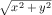

I Fixed-Size Data
Каждый язык программирования поставляется с языком данных и языком операций с данными. Первый язык всегда предоставляет некоторые формы атомарных данных; Чтобы представить разнообразную информацию в реальном мире в виде данных, программист должен научиться составлять базовые данные и описывать такие композиции. Точно так же второй язык обеспечивает некоторые базовые операции с атомарными данными; Задача программиста состоит в том, чтобы объединить эти операции в программы, выполняющие желаемые вычисления. Мы используем арифметику для комбинации этих двух частей языка программирования, потому что она обобщает то, что вы знаете из начальной школы.
Эта первая часть книги (I) знакомит с арифметикой BSL, языка программирования, используемого в Прологе(начальной части книги). От арифметики - небольшой шаг до ваших первых простых программ, известных вам из математики как функции . Однако, прежде чем вы это осознаете, процесс написания программ выглядит запутанным, и вы будете стремиться найти способ упорядочить свои мысли. Мы приравниваем “организацию мыслей“ к разработке(проектированию), и эта первая часть книги знакомит вас с систематическим способом разработки программ.
1 Арифметика
-
запишите “(”,Быстро просмотрите эту первую главу, переходите ко второй и возвращайтесь сюда, когда встретите “арифметику“, которую вы не знаете. .
-
дальше запишите название примитивной операции op,
-
далее запишите аргументы, разделенные пробелом, и
-
далее запишите “)”.
(+ 1 2)
(+ 1 2) == 3
В оставшейся части этой главы представлены четыре формы атомарных данных BSL: числа, строки, изображения и логические значения. В следующем томе Как разрабатывать компоненты/span> будет объяснено, как проектировать атомарные данные. Мы используем здесь слово “атомный“ по аналогии с физикой. Вы не можете заглянуть внутрь атомарных фрагментов данных, но у вас есть функции, которые объединяют несколько фрагментов атомарных данных в другие, извлекают их “свойства“, в том числе в терминах атомарных данных, и так далее. В разделах этой главы представлены некоторые из этих функций, также называемых примитивными операциями или предопределенными операциями. Вы можете найти другие в документации BSL, поставляемой с DrRacket.
1.1 Арифметика Чисел
Большинство людей думают о “числах“ и “операциях с числами“, когда слышат “арифметика“. “Операции с числами“ означает сложение двух чисел для получения третьего, вычитание одного числа из другого, определение наибольшего общего делителя двух чисел и многое другое. Если мы не будем воспринимать арифметику слишком буквально, мы можем даже включить синус угла, округление действительнго числа до ближайшего целого и т. Д.
(+ 3 4)
> (sin 0) 0
Когда дело доходит до чисел, программы BSL могут использовать натуральные числа, целые числа, рациональные числа, действительные числа и комплексные числа. Мы предполагаем, что вы слышали обо всем, кроме последнего. Последнее могло быть упомянуто в вашем классе средней школы. Если нет, не волнуйтесь; Хотя комплексные числа полезны для всех видов вычислений, новичку необязательно знать о них.
Действительно важное различие касается точности чисел. На данный момент важно понимать, что BSL различает точные числа (exact numbers) и неточные числа (inexact numbers). При вычислениях с точными числами BSL по возможности сохраняет эту точность. Например, (/ 4 6) дает точную дробь 2/3, которую DrRacket может отображать как правильную дробь, неправильную дробь или смешанную десятичную дробь. Поиграйте с компьютерной мышью, чтобы найти меню, в котором дробь заменяется десятичной дробью.
Некоторые числовые операции BSL не могут дать точного результата. Например, использование операции sqrt над 2 дает иррациональное число, которое нельзя описать конечным числом цифр. Поскольку компьютеры имеют конечный размер и BSL должен каким-то образом вписывать такие числа в компьютер, он выбирает приближение: 1.4142135623730951. Как упоминалось в Прологе, префикс #i предупреждает начинающих программистов об этой неточности. В то время как большинство языков программирования предпочитают снижать точность таким образом, лишь немногие рекламируют это и еще меньше предупреждают программистов.
Замечание о числах Слово “число(Number)” относится к большому количеству чисел, включая счетные числа, целые числа, рациональные числа, действительные числа и даже комплексные числа. В большинстве случаев вы можете безопасно приравнять Number к числовой прямой из начальной школы, хотя иногда этот перевод бывает слишком неточным. Если мы хотим быть точными, мы используем соответствующие слова: Integer, Rational и так далее. Мы можем даже уточнить эти понятия, используя такие стандартные термины, как PositiveInteger, NonnegativeNumber, NegativeNumber, и т. Д. Конец
Ожидаемый результат для этих значений - 5, но ваше выражение должно давать правильный результат даже после изменения этих определений.

Чтобы убедиться, что выражение работает правильно, измените x на 12 и y на 5, затем нажмите RUN. Результат должен быть 13.
Ваш учитель математики сказал бы, что вы вычислили формулу расстояния. Чтобы использовать формулу для альтернативных входных данных, вам нужно открыть DrRacket, отредактировать определения x и y, чтобы они представляли желаемые координаты, и нажать RUN. Но такой способ повторного использования формулы расстояния громоздок и наивен. Вскоре мы покажем вам способ определения функций, который упрощает повторное использование формул. Сейчас мы используем это упражнение, чтобы привлечь внимание к идее функций и подготовить вас к программированию с их помощью.
1.2 Арифметика Строк
Распространенное предубеждение относительно компьютеров касается их внутренностей. Многие считают, что все дело в битах и байтах - какими бы они ни были - и, возможно, в числах, потому что все знают, что компьютеры умеют вычислять. Хотя это правда, что инженеры-электрики должны понимать и изучать компьютер как такой объект, начинающие программисты и все остальные никогда (никогда) не должны поддаваться подобном мыслям.
В языках программирования речь идет о вычислениях с информацией, а информация бывает во всех видах и формах. Например, программа может работать с цветом, именами, деловыми письмами или разговорами между людьми. Даже если бы мы могли кодировать такую информацию в виде чисел, это было бы ужасной идеей. Только представьте, что вы запомнили большие таблицы кодов, например, 0 означает “red”(красный), а 1 означает “hello”(привет) и т. Д.
Вместо этого большинство языков программирования предоставляют по крайней мере один вид данных, который имеет дело с такой символьной информацией. На данный момент мы используем строки BSL. Вообще говоря, String(строки) - это последовательность символьных знаков, которые вы можете вводить с клавиатуры, а также некоторые другие, о которых мы пока не заботимся, заключенные в двойные кавычки. В Прологе: как программировать мы видели несколько строк BSL: "hello", "world", "blue", "red" и другие. Первые две - это слова, которые могут появиться в разговоре или в письме; остальные - называют цвет, который мы, возможно, захотим использовать.
Примечание. Мы используем 1String для обозначения символьных знаков клавиатуры, составляющих String(строку). Например, "red" состоит из трех таких 1Strings: "r", "e", "d". Оказывается, определение 1String - это немного больше, но сейчас можно думать о них как о String(строках) длины 1. Конец
> (string-append "what a " "lovely " "day" " 4 BSL") "what a lovely day 4 BSL"
(+ 1 1) == 2
(string-append "a" "b") == "ab"
(+ 1 2) == 3
(string-append "ab" "c") == "abc"
(+ 2 2) == 4
(string-append "a" " ") == "a "
...
...
См. Упражнение 1 чтобы узнать, как создавать выражения с помощью DrRacket.
1.3 Соединим все выше сказанное
-
string-length потребляет строку и производит число;
-
string-ith потребляет строку s вместе с числом i и извлекает 1String, расположенную в i-й позиции (считая от 0); а также
-
number->string потребляет число и производит строку.
> (string-length 42) string-length:expects a string, given 42
(+ (string-length "hello world") 20)
(+ (string-length "hello world") 20) == (+ 11 20) == 31
(+ (string-length (number->string 42)) 2) == (+ (string-length "42") 2) == (+ 2 2) == 4
(+ (string-length 42) 1)
См. Упражнение 1, чтобы узнать, как создавать выражения в DrRacket.
Упражнение 4. Используйте ту же настройку, что и в упражнении 3, чтобы создать выражение, которое удаляет i-ю позицию из str. Ясно, что это выражение создает более короткую строку, чем данная. Какие значения для i допустимы?
1.4 Арифметика Изображений
Image(Изображение) - это визуальный прямоугольный фрагмент данных, например фотография или геометрическая фигура и ее рамка. Не забудьте запросить библиотеку 2htdp/image в новой вкладке. Вы можете вставлять изображения в DrRacket везде, где вы можете записать выражение, потому что изображения являются значениями, такими же, как числа и строки.
-
circleсоздает изображение круга из радиуса, строки режима(mode) и строки цвета(color);
-
ellipse создает эллипс из двух диаметров, строки режима(mode), и строки цвета(color);
-
line создает линию из двух точек и строки цвета ;
-
rectangle создает прямоугольник шириной, высотой, строки режима и строки цвета;
-
text создает изображение текста из строки, размера шрифта и строки цвета; и
-
triangle создает направленный вверх равносторонний треугольник из размера, строки режима(mode) и строки цвета(color)
-
image-width определяет ширину изображения в терминах пикселей;
-
image-height определяет высоту изображения;
> (image-width (circle 10 "solid" "red")) 20
> (image-height (rectangle 10 20 "solid" "blue")) 20
(+ (image-width (circle 10 "solid" "red")) (image-height (rectangle 10 20 "solid" "blue")))
Правильное понимание примитивов третьего вида, создающих изображения, требует введения одной новой идеи: anchor point (точки привязки). Изображение - это не просто один пиксель, оно состоит из множества пикселей. В частности, каждое изображение похоже на фотографию, то есть на прямоугольник пикселей. Один из этих пикселей является неявной точкой привязки. Когда вы используете примитив изображения для компоновки двух изображений, композиция происходит относительно точек привязки, если вы явно не укажете какую-либо другую точку:
-
overlay помещает все изображения, к которым он применяется, друг на друга, используя центр в качестве точки привязки;
-
overlay/xy похож на overlay, но принимает два числа - x и y - между двумя аргументами изображеними. Она сдвигает второе изображение на x пикселей вправо и на y пикселей вниз - все относительно верхнего левого угла первого изображения; неудивительно, что отрицательный x сдвигает изображение влево, а отрицательный y - вверх; а также
-
overlay/align похож на overlay, но принимает две строки, которые смещают точку (точки) привязки к другим частям прямоугольников. Всего существует девять различных позиций; экспериментируйте со всеми возможностями!
-
empty-scene создает прямоугольник заданной ширины и высоты;
-
place-image помещает изображение на сцену в указаннй позиции. Если изображение не помещается на данную сцену, оно соответствующим образом обрезается;
-
scene+line потребляет сцену, четыре числа и цвет, чтобы нарисовать линию на данном изображении. Поэкспериментируйте, чтобы увидеть, как это работает.
арифметика чисел
арифметика изображений
(+ 1 1) == 2
(overlay (square 4 "solid" "orange") (circle 6 "solid" "yellow")) ==
(+ 1 2) == 3
(underlay (circle 6 "solid" "yellow") (square 4 "solid" "orange")) ==
(+ 2 2) == 4
(place-image (circle 6 "solid" "yellow") 10 10 (empty-scene 20 20)) == ...
...
Рисунок 10: Законы создания изображений
Законы арифметики для изображений аналогичны законам для чисел; см. рисунок 10 для некоторых примеров и сравнения с числовой арифметикой. Опять же, ни одно изображение не будет разрушено или изменено. Как и +, эти примитивы просто создают новые изображения, которые каким-то образом объединяют данные.
Упражнение 5. Используйте библиотеку the 2htdp/image, чтобы создать изображение простой лодки или дерева. Убедитесь, что вы можете легко изменить масштаб всего изображения.
(define cat )
1.5 Арифметика логических значений
Прежде чем мы сможем разрабатывать программы, нам нужен последний вид примитивных данных: логические значения(Boolean). Есть только два вида логических(Boolean) значений: #true и #false Программы используют логические значения для представления решений или состояния переключателей.
Упражнение 7. Логические выражения могут выражать некоторые повседневные проблемы. Предположим, вы хотите решить, подходящий ли сегодня день для посещения торгового центра. Вы идете в торговый центр либо если Надим Хамид предложил такую формулировку упражнения.не солнечно, либо сегодня пятница (потому что именно тогда в магазинах появляются новые распродажи).
См. Упражнение 1, чтобы узнать, как создавать выражения в DrRacket. Сколько комбинаций логических значений вы можете связать с sunny(солнечно) и friday(пятница)?
1.6 Объединяем все выше сказанное с логическими значениями
(define x 2)
-
Всегда вычисляется первое выражение. Его результат должен быть логическим значением.
-
Если результатом первого выражения является #true, то вычисляется второе выражение; в противном случае - третье. Какими бы ни были их результаты, они также являются результатом всего выражения if.
Щелкните результат правой кнопкой мыши и выберите другое представление.
(if (= x 0) 0 (/ 1 x)) == ; because x stands for 2 (if (= 2 0) 0 (/ 1 2)) == ; 2 is not equal to 0, (= 2 0) is #false (if #false 0 (/ 1 2)) == (/ 1 2) == ; normalize this to its decimal representation 0.5
(define x 0)
Помимо =, BSL предоставляет множество других примитивов сравнения. Объясните, что следующие четыре примитива сравнения определяют для чисел: <, <=, >, >=.
Строки не сравниваются = и его родственниками. Вместо них вы должны использовать string=? или string<=? или string>=? если вам когда-нибудь понадобится сравнить строки. Хотя очевидно, что string=? проверяет, равны ли две заданные строки, два других примитива открыты для интерпретации. Посмотрите их документацию. Или поэкспериментируйте, угадайте общий закон, а затем проверьте в документации, правильно ли вы угадали.
В следующих нескольких главах представлены более эффективные выражения, чем if, для выражения условных вычислений и, что наиболее важно, систематические способы их разработки.
(define cat )
Теперь попробуйте следующую модификацию. Создайте выражение, которое вычисляет, является ли изображение "tall"(высоким), "wide"(широким) или "square"(квадратным).
1.7 Предикаты: знай свои данные
(* (+ (string-length 42) 1) pi)
(define in ...) (string-length in)
Каждый класс данных, который мы представили в этой главе, имеет предикат. Поэкспериментируйте с number?, string?, image? и boolean? чтобы убедиться, что вы понимаете, как они работают.
См. Упражнение 1 чтобы узнать, как создавать выражения в DrRacket.
Упражнение 10. Теперь расслабьтесь, поешьте, поспите и переходите к следующей главе.
2 Функции и программы
Что касается программирования, “арифметика“ - это половина дела; другая половина - “алгебра“. Конечно, “алгебра“ относится к школьному понятию алгебры так же мало/сильно, как понятие “арифметика“ из предыдущей главы относится к арифметике, которой обучают в арифметике в начальной школе. В частности, необходимые понятия алгебры включают переменную, определение функции, применение функции и композицию функции. Эта глава вновь знакомит вас с этими понятиями в увлекательной и доступной форме.
2.1 Функции
Программы - это функции. Как и функции, программы потребляют(используют) входные данные и производят выходные данные. В отличие от функций, которые вы, возможно, знаете, программы работают с различными данными: числами, строками, изображениями, их смесями и т. Д. Более того, программы запускаются событиями в реальном мире, и результаты программ влияют на реальный мир. Например, программа для работы с электронными таблицами может реагировать на нажатия клавиш бухгалтера, заполняя некоторые ячейки числами, или программа-календарь на компьютере может запускать программу ежемесячного расчета заработной платы в последний день каждого месяца. Наконец, программа не может использовать все свои входные данные сразу, вместо этого она может решить обрабатывать данные поэтапно.
Определения Хотя многие языки программирования скрывают связь между программами и функциями, BSL выдвигает ее на первый план. Каждая программа BSL состоит из нескольких определений, за которыми обычно следует выражение, включающее эти определения. Есть два вида определений:
-
определения констант, формы (define Variable Expression), с которыми мы столкнулись в предыдущей главе; а также
-
определения функций, которые бывают разных видов, одино из которых мы использовали в Прологе .
-
“(define (”,
-
имя функции,
-
за которым следуют несколько переменных, разделенных пробелом и оканчивающихся на “)”,
-
и выражения, за которым следует “)”.
Прежде чем мы объясним, почему эти примеры глупые, нам нужно объяснить, что означают определения функций. Грубо говоря, определение функции вводит новую операцию с данными; Другими словами, оно добавляет операцию в наш словарь, если мы думаем о примитивных операциях как о тех, которые всегда доступны. Как и примитивная функция, функция определенная использует входные данные. Количество переменных определяет, сколько входов - также называемых аргументами или параметрами - потребляемые(принимаемые) функцией. Таким образом, f - это функция с одним аргументом, иногда называемая unary(унарной) функцией. Напротив, g - это функция с двумя аргументами, также называемая binary(бинарной), а h - это ternary(тройная) функция или функция с тремя аргументами. Выражение, часто называемое телом функции, определяет вывод.
Примеры глупые, потому что выражения внутри функций не включают переменные. Поскольку переменные относятся к входным параметрам, отсутствие упоминания их в выражениях означает, что выходные данные функции не зависят от их входных данных и, следовательно, всегда одинаковы. Нам не нужно писать функции или программы, если результат всегда один и тот же.
(define x 3)
На данный момент единственный оставшийся вопрос - как функция получает свои входные данные. С этой целью мы обратимся к понятию применения(applying) функции.
-
запишите “(”,
-
запишите имя определяемой функции f,
-
запишите столько аргументов, сколько потребляет f, через пробел,
-
и добвьте в конце “)”.
> (f 1) 1
> (f "hello world") 1
> (f #true) 1
> (f) f:expects 1 argument, found none
> (f 1 2 3 4 5) f:expects only 1 argument, found 5
> (+) +:expects at least 2 arguments, found none
Упражнение 11. Определите функцию, которая использует два числа, x и y, и вычисляет расстояние от точки (x,y) до начала координат.
В упражнении 1 вы разработали правую часть этой функции для конкретных значений x и y. Теперь добавьте заголовок.
Упражнение 12. Определите функцию cvolume, которая принимает длину стороны равностороннего куба и вычисляет его объем. Если у вас есть время, подумайте также об определении csurface.
Совет. Равносторонний куб - это трехмерный контейнер, ограниченный шестью квадратами. Вы можете определить поверхность(surface) куба, если знаете, что площадь квадрата равна его длине, умноженной на себя. Его объем - это длина, умноженная на площадь одного из его квадратов. (Почему?)
Упражнение 13. Определите функцию string-first, которая извлекает первую 1String из непустой/span> строки.
Упражнение 14. Определите функцию string-last, которая извлекает последнюю строку 1String из непустой строки.
Упражнение 15. Определите ==>. Функция использует два логических значения, назовите их sunny и friday. Её ответ - #true, если sunny(солнечно) - ложно или friday(пятница) - истинно. Примечание. Логики называют эту логическую операцию implication(импликацией), и для этой цели они используют обозначение sunny => friday.
Упражнение 16. Определите функцию iimage-area, которая подсчитывает количество пикселей в данном изображении. См. Идеи в упражнении 6.
Упражнение 17. Определите функцию image-classify, которая потребляет(принимает) изображение и условно производит "tall"(высокое), если высота изображения больше ширины, "wide"(широкое), если оно больше широкое, чем высокое, или "square"(квадратное), если его ширина и высота совпадают. . См. Идеи в упражнении 8
Упражнение 18. Определите функцию string-join, которая использует две строки и складывает их используя символьный знак "_" между ними. Идеи см. В упражнении 2
Упражнение 19. Определите функцию string-insert, которая использует строку str плюс число i и вставляет "_" в i-ю позицию строки str. Предположим, что i - это число от 0 до длины данной строки (включительно). См. Идеи в упражненииnbsp;3. Подумайте, как string-insert справляется с "".
Упражнение 20. Определите функцию string-delete, которая использует строку и число i и удаляет i-ю позицию из str. Предположим, что i - это число от 0 (включительно) до длины данной строки (исключая). Идеи см. В упражнении 4. Может ли string-delete работать с пустыми строками?
2.2 Вычисление
Определения функций и применения работают в тандеме. Если вы хотите разрабатывать программы, вы должны понимать это сотрудничество, потому что вам нужно представить, как DrRacket запускает ваши программы, и потому, что вам нужно выяснить, что идет не так, когда что-то идет не так, а что-то будет не так.
Хотя вы, возможно, видели эту идею в курсе алгебры, мы предпочитаем объяснять ее по-своему. Итак, поехали. Выполнение(Оценка) применения функции происходит в три этапа: DrRacket определяет значения выражений аргументов; он проверяет, что количество аргументов и количество параметров функции одинаковы; в этом случае DrRacket вычисляет значение тела функции, при этом все параметры заменяются соответствующими значениями аргументов. Последнее значение является значением применения функции. Это непросто, поэтому нам нужны примеры.
(f (+ 1 1)) == ; DrRacket knows that (+ 1 1) == 2 (f 2) == ; DrRacket replaced all occurrences of x with 2 1
(ff (+ 1 1)) == ; DrRacket again knows that (+ 1 1) == 2 (ff 2) == ; DrRacket replaces a with 2 in ff's body (* 10 2) == ; and from here, DrRacket uses plain arithmetic 20
(+ (ff (+ 1 2)) 2) == ; DrRacket knows that (+ 1 2) == 3 (+ (ff 3) 2) == ; DrRacket replaces a with 3 in ff's body (+ (* 10 3) 2) == ; now DrRacket uses the laws of arithmetic (+ 30 2) == 32
(* (ff 4) (+ (ff 3) 2)) == ; DrRacket substitutes 4 for a in ff's body (* (* 10 4) (+ (ff 3) 2)) == ; DrRacket knows that (* 10 4) == 40 (* 40 (+ (ff 3) 2)) == ; now it uses the result of the above calculation (* 40 32) == 1280 ; because it is really just math
В общем, DrRacket невероятно быстро изучает алгебру; он знает все законы арифметики и отлично справляется с заменой(подстановкой). Более того, DrRacket не может только определять значение выражения; он также может показать вам, как/span> это происходит. То есть он может шаг за шагом показать вам, как решить эти алгебраические задачи, которые просят вас определить значение выражения.
Еще раз взгляните на кнопки DrRacket. Одна из них выглядит как кнопка “advance to next track”(перейти к следующей дорожке) на аудиоплеере. Если вы нажмете эту кнопку, появится stepper окно(пошагового исполнения программы), в котором вы сможете выполнить пошагово вычисление программы из области определений.
Введите определение ff в область определений. Добавьте ниже (ff (+ 1 1)). Теперь нажмите STEP(ШАГ). Появится окно пошагового исполнения; На рисунке 11 показано, как это выглядит в версии 6.2 программного обеспечения. На этом этапе вы можете использовать стрелки вперед и назад, чтобы увидеть все этапы вычислений, которые DrRacket использует для определения значения выражения. Посмотрите, как шаговый исполнитель выполняет те же вычисления, что и мы.
Стойте! Да, вы могли бы использовать DrRacket, чтобы решить домашнее задание по алгебре. Поэкспериментируйте с различными вариантами, которые предлагает stepper(пошаговый исполнитель).
Рисунок 11: DrRacket пошаговый исполнитель(stepper)
Упражнение 21. Используйте степпер DrRacket для пошагового выполнения (ff (ff 1)). Также попробуйте (+ (ff 1) (ff 1)). Использует ли пошаговый исполнитель DrRacket результаты вычислений повторно?
В этот момент вы можете подумать, что снова изучаете курс алгебры со всеми этими вычислениями, включающими неинтересные функции и числа. К счастью, этот подход распространяется на все программы в этой книге, в том числе и на самые интересные.
(string-append "hello" " " "world") == "hello world" (string-append "bye" ", " "world") == "bye, world" ...
(define (opening first-name last-name) (string-append "Dear " first-name ","))
> (opening "Matthew" "Fisler") "Dear Matthew,"
(opening "Matthew" "Fisler") == ; DrRacket substitutes "Matthew" for first-name (string-append "Dear " "Matthew" ",") == "Dear Matthew,"
Остальная часть книги вводит больше форм данных. В конце концов вы столкнетесь с императивными операциями, которые не объединяют и не извлекают значения, а изменяют их. Чтобы вычислить с помощью таких операций, вам нужно будет добавить некоторые законы к законам арифметики и подстановки. Для объяснения операций с данными мы всегда пользуемся законами, подобными арифметическим в этой книге.
(define (image-classify img) (cond [(>= (image-height img) (image-width img)) "tall"] [(= (image-height img) (image-width img)) "square"] [(<= (image-height img) (image-width img)) "wide"]))
(define (string-insert s i) (string-append (substring s 0 i) "_" (substring s i))) (string-insert "helloworld" 6)
2.3 Составные(Композиционные) функции
Программа редко состоит из одного определения функции. Обычно программы состоят из определения основной и нескольких других функций, которые превращают результат одного применения функции во входные данные для другого. По аналогии с алгеброй мы называем этот способ определения функций композицией и называем эти дополнительные функции вспомогательными функциями или функциями помощниками.
(define (letter fst lst signature-name) (string-append (opening fst) "\n\n" (body fst lst) "\n\n" (closing signature-name))) (define (opening fst) (string-append "Dear " fst ",")) (define (body fst lst) (string-append "We have discovered that all people with the" "\n" "last name " lst " have won our lottery. So, " "\n" fst ", " "hurry and pick up your prize.")) (define (closing signature-name) (string-append "Sincerely," "\n\n" signature-name "\n")) Рисунок 12: Пакетная программа
Рассмотрим программу на рисунке 12 для заполнения шаблонов писем. Она состоит из четырех функций. Первая - это основная функция, которая создает полное письмо, состоящее из имени и фамилии адресата, плюс подпись. Основная функция обращается к трем вспомогательным функциям для создания трех частей письма - открытия(заголовка), тела и подписи - и объединяет результаты в правильном порядке с помощью string-append.
> (letter "Matthew" "Fisler" "Felleisen") "Dear Matthew,\n\nWe have discovered that ...\n"
> (letter "Kathi" "Felleisen" "Findler") "Dear Kathi,\n\nWe have discovered that ...\n"
> (write-file 'stdout (letter "Matt" "Fiss" "Fell"))
Dear Matt,
We have discovered that all people with the
last name Fiss have won our lottery. So,
Matt, hurry and pick up your prize.
Sincerely,
Fell
'stdout
В общем, когда проблема относится к разным задачам вычислений, программа должна состоять из одной функции для каждой задачи и основной функции, которая объединяет все это вместе. Мы формулируем эту идею в виде простого слогана:
Определите одну функцию для каждой задачи.
Преимущество следования этому слогану состоит в том, что вы получаете достаточно небольшие функции, каждая из которых проста для понимания и состав которых легко понять. Когда вы научитесь разрабатывать функции, вы поймете, что заставить маленькие функции работать правильно, намного проще, чем сделать это с большими. Еще лучше, если вам когда-нибудь понадобится изменить часть программы из-за некоторого изменения в формулировке проблемы, как правило, гораздо проще найти соответствующие части, когда она организована как набор небольших функций, а не большой, монолитный блок.
Вот небольшая иллюстрация этого момента на примере задачи:
Пример задачи Владелец монопольного кинотеатра в маленьком городке имеет полную свободу устанавливать цены на билеты. Чем больше он берет, тем меньше людей могут позволить себе билеты. Чем меньше он берет, тем дороже обходится шоу, потому что посещаемость растет. В недавнем эксперименте владелец установил зависимость между ценой билета и средней посещаемостью.
При цене 5 долларов за билет на спектакль приходят 120 человек. На каждые 10 центов изменения стоимости билета средняя посещаемость меняется на 15 человек. То есть, если владелец взимает 5,10 доллара, в среднем приходит около 105 человек; если цена упадет до 4,90 доллара, средняя посещаемость увеличится до 135. Давайте переведем эту идею в математическую формулу:Стоп! Объясните знак минус, прежде чем продолжить.К сожалению, увеличение посещаемости также обходится дороже. Каждое выступление обходится владельцу по фиксированной цене в размере 180 долларов плюс переменные затраты в размере 0,04 доллара на участника.
Владелец хотел бы знать точное соотношение между прибылью и ценой билета, чтобы максимизировать прибыль.
-
В постановке задачи указано, как количество участников зависит от цены билета. Очевидно, что вычисление этого числа - отдельная задача и поэтому заслуживает отдельного определения функции:
(define (attendees ticket-price) (- 120 (* (- ticket-price 5.0) (/ 15 0.1)))) -
revenue(Выручка) создается исключительно за счет продажи билетов, то есть это в точности произведение цены билета и количества участников:
(define (revenue ticket-price) (* ticket-price (attendees ticket-price))) -
cost(Стоимость) состоит из двух частей: фиксированной части (180 долларов США) и переменной части, которая зависит от количества участников. Учитывая, что количество посетителей является функцией цены билета, функция для вычисления стоимости шоу должна также потреблять(использовать) цену билета, чтобы она могла повторно использовать функцию attendees:
(define (cost ticket-price) (+ 180 (* 0.04 (attendees ticket-price)))) -
Наконец, profit(прибыль) - это разница между доходом и затратами при заданной цене билета:
(define (profit ticket-price) (- (revenue ticket-price) (cost ticket-price))) BSL определение profit(прибыли) непосредственно следует за предложением неформального описания проблемы.
Упражнение 27. Наше решение примера задачи содержит несколько констант в середине функций. Как уже указывалось в One Program, Many Definitions(Одна программа, Много определений), лучше давать имена таким константам, чтобы будущие читатели понимали, откуда берутся эти числа. Соберите все определения в области определений DrRacket и измените их так, чтобы все магические числа были преобразованы в постоянные определения.
Упражнение 28. Определите потенциальную прибыль для этих цен на билеты: 1 доллар, 2 доллара, 3 доллара, 4 доллара и 5 долларов. Какая цена максимизирует прибыль кинотеатра? Определите лучшую цену билета до копейки.
(define (profit price) (- (* (+ 120 (* (/ 15 0.1) (- 5.0 price))) price) (+ 180 (* 0.04 (+ 120 (* (/ 15 0.1) (- 5.0 price)))))))
Упражнение 29. Изучив стоимость шоу, владелец обнаружил несколько способов снизить стоимость. В результате этих улучшений больше нет фиксированной стоимости; остаются переменные затраты в размере 1,50 доллара на участника.
Измените обе программы, чтобы отразить это изменение. Когда программы будут изменены, протестируйте их еще раз с ценами на билеты 3, 4 и 5 долларов и сравните результаты.
2.4 Глобальные константы
-
напишите “(define ”,
-
ниже запишите имя,
-
с последующим пробелом и выражением, и
-
ниже запишите “)”.
; the current price of a movie ticket: (define CURRENT-PRICE 5) ; useful to compute the area of a disk: (define ALMOST-PI 3.14) ; a blank line: (define NL "\n") ; an empty scene: (define MT (empty-scene 100 100))
(define ALMOST-PI 3.14159) ; an empty scene: (define MT (empty-scene 200 800))
(define WIDTH 100) (define HEIGHT 200) (define MID-WIDTH (/ WIDTH 2)) (define MID-HEIGHT (/ HEIGHT 2))
Опять же, мы заявляем императивный лозунг:
Для каждой константы, упомянутой в формулировке задачи, введите одно определение константы.
Упражнение 30. Определите константы для программы оптимизации цен в кинотеатре, чтобы ценовая чувствительность посещаемости (15 человек на каждые 10 центов) стала вычисляемой константой.
2.5 Программы
-
пакетная программа потребляет все свои входные данные сразу и вычисляет свой результат. Её основная функция - это композиция вспомогательных функций, которые могут относиться к дополнительным вспомогательным функциям и так далее. Когда мы запускаем пакетную программу, операционная система вызывает основную функцию на своих входах и ожидает вывода программы.
-
интерактивная программа потребляет некоторые из своих входных данных, вычисляет, производит некоторые выходные данные, потребляет больше входных данных и так далее. Когда появляется ввод, мы говорим о событии(event) и создаем интерактивные программы как программы, управляемые событиями(event-driven). Основная функция такой программы, управляемой событиями, использует выражение, чтобы описать, какие функции вызывать для каких типов событий. Эти функции называются обработчиками событий (event handlers).
Когда мы запускаем интерактивную программу, функция main сообщает об этом описании операционной системе. Как только происходят события ввода, операционная система вызывает соответствующий обработчик событий. Точно так же операционная система знает из описания, когда и как представлять результаты этих вызовов функций в качестве выходных данных.
Пакетные программы Как уже упоминалось, пакетная программа потребляет(использует) все свои входные данные сразу и вычисляет результат на основе этих входных данных. Её основная функция ожидает некоторые аргументы, передает их вспомогательным функциям, получает результаты от них и объединяет эти результаты в свой собственный окончательный ответ.
Как только программы созданы, мы хотим их использовать. В DrRacket мы запускаем пакетные программы в области взаимодействия, чтобы мы могли наблюдать за работой программы.
Программы даже более полезны, если они могут извлекать входные данные из одного файла и передавать выходные данные в другой файл. В самом деле, название “пакетная программа“ восходит к ранним дням развития вычислительной техники, когда программа считывала файл (или несколько файлов) из партии перфокарт и помещала результат в какой-то другой файл(ы), также как и партию карт. По идее, пакетная программа считывает входной файл(ы) сразу, а также сразу создает файл(ы) результатов.
-
read-file, которая считывает содержимое всего файла как строку, и
-
write-file, которая создает файл из заданной строки.
> (write-file "sample.dat" "212") "sample.dat"
> (read-file "sample.dat") "212"
|
212 |
> (write-file 'stdout "212\n") 212
'stdout
Давайте проиллюстрируем создание пакетной программы на простом примере. Предположим, мы хотим создать программу, которая преобразует температуру, измеренную на градуснике Фаренгейта, в температуру Цельсия. Не волнуйтесь, этот вопрос не является проверкой ваших знаний по физике; вот формула преобразования: :Эта книга не о запоминании фактов, но мы надеемся, что вы знаете, где их найти. Вы знаете, где узнать, как конвертируются температуры?
Естественно, в этой формуле f - температура по Фаренгейту, а C - температура по Цельсию. Хотя этой формулы может быть достаточно для учебника предалгебры, математик или программист должен написать C(f) в левой части уравнения, чтобы напомнить читателям, что f - заданное значение, а C вычисляется из f.
> (C 32) 0
> (C 212) 100
> (C -40) -40
(define (convert in out) (write-file out (string-append (number->string (C (string->number (read-file in)))) "\n")))
-
(read-file in) извлекает содержимое указанного файла в виде строки;
-
string->number превращает эту строку в число;
-
C интерпретирует число как температуру по Фаренгейту и преобразует его в температуру по Цельсию;
-
number->string потребляет эту температуру по Цельсию и превращает ее в строку; а также
-
(write-file out ...) помещает эту строку в файл с именем out.
(string-append ... "\n")
Напротив, композиция средних функций в курсе предалгебры включает две функции, возможно, три. Однако имейте в виду, что программы выполняют реальную задачу, в то время как упражнения по алгебре просто иллюстрируют идею композиции функций.
> (write-file "sample.dat" "212") "sample.dat"
> (convert "sample.dat" 'stdout) 100
'stdout
> (convert "sample.dat" "out.dat") "out.dat"
> (read-file "out.dat") "100"
В дополнение к запуску пакетной программы полезно также выполнить вычисления по шагам. Убедитесь, что файл "sample.dat"существует и содержит только число, затем нажмите кнопку STEP(ШАГ) в DrRacket. Откроется другое окно, в котором вы можете просмотреть вычислительный процесс, который запускает вызов основной функции пакетной программы. Вы увидите, что процесс следует описанному выше.
> (write-file 'stdout (letter "Matthew" "Fisler" "Felleisen"))
Dear Matthew,
We have discovered that all people with the
last name Fisler have won our lottery. So,
Matthew, hurry and pick up your prize.
Sincerely,
Felleisen
'stdout
(define (main in-fst in-lst in-signature out) (write-file out (letter (read-file in-fst) (read-file in-lst) (read-file in-signature))))
Создайте соответствующие файлы, запустите main и проверьте, доставляет ли(формирует ли) она ожидаемое письмо в данном файле.
Интерактивные программы Пакетные программы являются основным продуктом использования компьютеров в бизнесе, но программы, с которыми сейчас сталкиваются люди, являются интерактивными. В наши дни люди в основном взаимодействуют с настольными приложениями с помощью клавиатуры и мыши. Кроме того, интерактивные программы также могут реагировать на генерируемые компьютером события, например, тиканье часов или поступление сообщения с другого компьютера.
Упражнение 32. Большинство людей больше не используют настольные компьютеры только для запуска приложений, но также используют сотовые телефоны, планшеты и информационные экраны своих автомобилей. Скоро люди будут использовать носимые компьютеры в виде умных очков, одежды и спортивного снаряжения. В несколько более отдаленном будущем люди могут появиться со встроенными биокомпьютерами, которые напрямую взаимодействуют с функциями тела. Подумайте о десяти различных формах событий, с которыми придется иметь дело программным приложениям на таких компьютерах.
Цель этого раздела - познакомить с механикой написания интерактивных BSL программ. Поскольку многие примеры стиля разработки в этой книге представляют собой интерактивные программы, мы представляем идеи медленно и осторожно. Вы можете вернуться к этому разделу, когда будете заниматься некоторыми проектами интерактивного программирования; второе или третье чтение может прояснить некоторые продвинутые аспекты механики.
Сам по себе чистый компьютер - бесполезное физическое оборудование. Он называется hardware(твердым изделием, обычно переводимым как оборудование), потому что к нему можно прикоснуться. Это оборудование становится полезным после установки software(программного обеспечения), то есть набора программ. Обычно первым программным обеспечением, устанавливаемым на компьютер, является операционная система. Её задача - управлять компьютером за вас, включая подключенные устройства, такие как монитор, клавиатура, мышь, динамики и т. Д. Это работает так: когда пользователь нажимает клавишу на клавиатуре, операционная система запускает функцию, обрабатывающую нажатия клавиш. Мы говорим, что нажатие клавиши является key event(клавиатурным событием), а функция - event handler(обработчиком события). В том же духе операционная система запускает обработчик событий для отсчетов часов, для действий мыши и так далее. И наоборот, после того, как обработчик событий завершил свою работу, операционной системе может потребоваться изменить изображение на экране, позвонить в колокольчик, распечатать документ или выполнить аналогичное действие. Для выполнения этих задач он также выполняет функции, преобразующие данные операционной системы в звуки, изображения, действия на принтере и т. Д.
Естественно, у разных программ разные потребности. Одна программа может интерпретировать нажатия клавиш как сигналы для управления ядерным реактором; другая передает их текстовому процессору. Чтобы универсальный компьютер работал над этими радикально разными задачами, разные программы устанавливают разные обработчики событий. То есть программа запуска ракеты использует один вид функций для работы с тактами(отсчетами) часов, в то время как программное обеспечение духовки использует другой вид.
Для разработки интерактивной программы требуется способ обозначить некоторую функцию как функцию, которая отвечает за события клавиатуры, другую функцию для работы с тактами часов, третью для представления некоторых данных в виде изображения и т. Д. Задача основной(main) функции интерактивной программы - сообщить эти обозначения(назначения) операционной системе, то есть программной платформе, на которой запускается программа.
DrRacket - небольшая операционная система, а BSL - один из языков программирования. Последний поставляется с библиотекойe 2htdp/universe , которая предоставляет big-bang(большой взрыв), механизм, сообщающий операционной системе, какая функция с каким событием имеет дело. Кроме того, big-bang отслеживает состояние программы. Для этого у него есть одно обязательное подвыражение, значение которого становится initial state(начальным состоянием) программы. В противном случае big-bang состоит из одного обязательного предложения и множества дополнительных предложений. Обязательно(required) предложение to-draw сообщает DrRacket, как визуализировать состояние программы, включая начальное. Каждое из других необязательных предложений сообщает операционной системе, что определенная функция заботится об определенном событии. Обработка события в BSL означает, что функция использует(принимает) состояние программы и описание события и создает следующее состояние программы. Поэтому мы говорим о current state (текущем состоянии) программы.
Терминология В некотором смысле выражение big-bang(большой взрыв) описывает, как программа взаимодействует с небольшим сегментом мира. Этот мир может быть игрой, в которую играют пользователи программы, анимацией, которую смотрит пользователь, или текстовым редактором, который пользователь использует для управления некоторыми заметками. Поэтому исследователи языка программирования часто говорят, что big-bang - это описание маленького мира: его начального состояния, как состояния преобразуются, как состояния отображаются и как big-bang может определять другие атрибуты текущего состояния. В этом духе мы также говорим о state of the world(состоянии мира) и даже называем big-bang программы - world programs(программными мирами). Конец
> (number->square 5) > (number->square 10) > (number->square 20)
-
каждый раз, когда часы тикают, вычитайте 1 из текущего состояния;
-
затем проверьте, что zero? верно для нового состояния, и если да, остановиться; а также
-
каждый раз, когда обработчик события возвращает значение, используйте number->square, чтобы отобразить его как изображение.
100, 99, 98, ..., 2, 1, 0
(define (reset s ke) 100)
Вы увидите, что красный квадрат сжимается со скоростью один пиксель за один такт отсчета часов. Однако, как только вы нажмете клавишу "a", красный квадрат снова расширится до полного размера, потому что выполняется reset(сброс) текущей длины квадрата и "a" и возвращается 100. Это число становится новым состоянием big-bang и number->square превращает его в полноразмерный красный квадрат.
Чтобы понять, как вычисляются выражения big-bang в целом, давайте взглянем на схематическую версию:
Вычисление этого выражения big-bang начинается с cw0, которое обычно является выражением. DrRacket, наша операционная система, устанавливает значение cw0 как текущее состояние. Она использует render для преобразования текущего состояния в изображение, которое затем отображается в отдельном окне. Действительно, render - это единственное средство выражения big-bang для представления данных миру.
-
Каждый раз, когда тикают часы, DrRacket применяет tock к текущему состоянию big-bang и получает в ответ значение; big-bang рассматривает это возвращаемое значение как следующее текущее состояние.
-
Каждый раз, когда нажимается клавиша, DrRacket применяет ke-h к текущему состоянию big-bang и строке, представляющей клавишу; например, нажатие клавиши “a” обозначается буквой "a", а клавиша со стрелкой влево - "left". Когда ke-h возвращает значение, big-bang рассматривает его как следующее текущее состояние.
-
Каждый раз, когда мышь входит в окно, покидает его, перемещается или нажимается, DrRacket применяет me-h к текущему состоянию big-bang, координатам x- и y- события и строке, которая представляет тип события мыши, которое произошло; например, нажатие кнопки мыши обозначается как "button-down". Когда me-h возвращает значение, big-bang рассматривает его как следующее текущее состояние.
текущее состояние
cw0
cw1
...
событие
e0
e1
...
отчет часов(тик)
(tock cw0)
(tock cw1)
...
при нажатии клавиши
(ke-h cw0 e0)
(ke-h cw1 e1)
...
при событии мыши
(me-h cw0 e0 ...)
(me-h cw1 e1 ...)
...
его отбражение
(render cw0)
(render cw1)
...
Figure 13: How big-bang works
-
Если e0 - это такт часов, big-bang вычисляет (tock cw0) для получения cw1.
-
Если e0 является клавиатурным событием, вычисляется (ke-h cw0 e0) и дает cw1. Обработчик должен применяться к самому событию, потому что, как правило, программы будут реагировать на каждую клавишу по-разному.
-
Если e0 - это событие мыши, big-bang запускает (me-h cw0 e0 ...) чтобы получить cw1. Вызов представляет собой sketch(набросок), потому что событие мыши e0 действительно связано с несколькими частями данных - его природой и координатами - и мы просто хотим указать это.
-
Наконец, render превращает текущее состояние в изображение, на которое указывает последняя строка. DrRacket отображает эти изображения в отдельном окне.
-
cw1 это результат (ke-h cw0 "a");
-
cw2 это результат (tock cw1); and
-
cw3 это результат (me-h cw2 90 100 "button-down").
-
cw1 это результат (tock cw0);
-
cw2 это результат (tock cw1); and
-
cw3 это результат (tock cw2).
(tock (tock (tock cw0)))
(define BACKGROUND (empty-scene 100 100)) (define DOT (circle 3 "solid" "red")) (define (main y) (big-bang y [on-tick sub1] [stop-when zero?] [to-draw place-dot-at] [on-key stop])) (define (place-dot-at y) (place-image DOT 50 y BACKGROUND)) (define (stop y ke) 0) Рисунок 14: Первая интерактивная программа
Короче говоря, последовательность событий определяет, в каком порядке big-bang концептуально проходит приведенную выше таблицу возможных состояний, чтобы достичь текущего состояния для каждого временного интервала. Конечно, big-bang не касается текущего состояния; он просто защищает его и при необходимости передает обработчикам событий и другим функциям.
Отсюда легко определить первую интерактивную программу. См. рисунок 14. Программа состоит из двух определений констант, за которыми следуют три определения функций: main, запускающую интерактивную программу big-bang; place-dot-at, которая переводит текущее состояние в изображение; и stop, которая отбрасывает свои входные данные и возвращает 0.
> (place-dot-at 89) > (stop 89 "q") 0
> (main 90)
|
|
|
Расслабляемся. |
|
|
К настоящему моменту вы можете почувствовать, что эти первые две главы ошеломляют. Они вводят множество новых концепций, включая новый язык, его словарь, его значение, его идиомы, инструмент для записи текстов в этом словаре и способ запуска этих программ. Столкнувшись с этим изобилием идей, вы можете задаться вопросом, как можно создать программу, когда ей предлагают постановку задачи. Чтобы ответить на этот центральный вопрос, в следующей главе мы сделаем шаг назад и подробно рассмотрим систематическую разработку программ. Так что сделайте передышку и продолжайте, когда будете готовы.
3 Как Разрабатывать(проектировать) Программы
Первые несколько глав этой книги показывают, что обучение программированию требует некоторого владения многими концепциями. С одной стороны, программированию нужен язык, обозначение для передачи того, что мы хотим вычислить. Языки для формулирования программ - это искусственные конструкции, хотя освоение языка программирования имеет общие элементы с усвоением естественного языка. Оба имеют словарный запас, грамматику и понимание того, что означают “phrases”(фразы).
С другой стороны, очень важно научиться переходить от постановки задачи к программе. Нам нужно определить, что уместно в формулировке проблемы, а что можно игнорировать. Нам нужно выяснить, что программа потребляет(использует), что она производит и как соотносит входные данные с выходными. Мы должны знать или выяснять, предоставляют ли выбранный язык и его библиотеки определенные базовые операции для данных, которые наша программа должна обрабатывать. В противном случае нам, возможно, придется разработать вспомогательные функции, реализующие эти операции. Наконец, когда у нас есть программа, мы должны проверить, действительно ли она выполняет предполагаемое вычисление. И это может выявить всевозможные ошибки, которые нам необходимо понять и исправить.
Все это звучит довольно сложно, и вы можете задаться вопросом, почему мы не запутываемся, экспериментируя тут и там, оставляя достаточно хороший код в покое, когда результаты выглядят достойно. Такой подход к программированию, часто называемый “гаражным программированием“, широко распространен и во многих случаях оказывается успешным; иногда это стартовая площадка для начинающей компании. Тем не менее, стартап не может продавать результаты “гаражных усилий“, потому что их могут использовать только оригинальные (первоначальные) программисты и их друзья.
Хорошая программа поставляется с коротким описанием, в котором объясняется, что она делает, какие входные данные ожидает и что она производит. В идеале это также дает некоторую уверенность в том, что она действительно работает. В лучших условиях связь программы с постановкой задачи очевидна, так что небольшое изменение в постановке задачи легко перевести в небольшое изменение в программе. Инженеры-программисты называют это “программным продуктом“.
Вся эта дополнительная работа необходима, потому что программисты не создают программы для себя. Программисты пишут программы для чтения другими программистами, и иногда люди запускают эти программы, чтобы выполнить работу. Слово “другой“ также включает в себя более старые версии кода программиста, который обычно не может вспомнить все мысли, которые были вложены при разработке младшая версии программы. Большинство программ представляют собой большие сложные наборы взаимодействующих функций, и никто не может написать все эти функции за один день. Программисты присоединяются к проектам, пишут код, покидают проекты; другие берут на себя их программы и работают над ними. Другая трудность состоит в том, что клиенты программиста склонны менять свое мнение о том, какую проблему они действительно хотят решить. Обычно у них все почти правильно, но чаще всего они ошибаются в некоторых деталях. Хуже того, сложные логические конструкции, такие как программы, почти всегда страдают от человеческих ошибок; Короче говоря, программисты ошибаются. В конце концов, кто-то обнаруживает эти ошибки, и программисты должны их исправить. Им нужно перечитать программы написанные месяц назад, год назад или двадцать лет назад и изменить их.
Упражнение 33. Изучите проблему “2000 года“.
Здесь мы представляем рецепт разработки, который объединяет пошаговый процесс со способом организации программ вокруг данных проблемы. Для читателей, которые не любят долго смотреть в пустой экран, этот рецепт разработки предлагает способ систематического прогресса. Для тех из вас, кто учит других разрабатывать программы, рецепт - это инструмент для диагностики трудностей новичка. Для других наш рецепт может быть чем-то, что они могут применить в других областях, например, в медицине, журналистике или инженерии. Для тех, кто хочет стать настоящими программистами, рецепт разработки также предлагает способ понять существующие программы и работать с ними, хотя не все программисты используют метод, подобный этому рецепту разработки, для создания программ. Остальная часть этой главы посвящена первым шагам ребенка в мир рецептов разработки; следующие главы и части так или иначе уточняют и расширяют рецепт.
3.1 Разработка Функций
Информация и данные Цель программы - описать вычислительный процесс, который потребляет(принимает) некоторую информацию и производит новую информацию. В этом смысле программа похожа на инструкции, которые учитель математики дает ученикам начальной школы. Однако, в отличие от ученика, программа работает не только с числами: она вычисляет с помощью навигационной информации, ищет адрес человека, включает переключатели или проверяет состояние видеоигры. Вся эта информация поступает из части реального мира, часто называемой domain(доменом/областью) программы, и результаты вычислений программы представляют больше информации в этой области.
Информация играет центральную роль в нашем описании. Думайте об информации как о фактах о области деятельности(домене) программы. Для программы, посвященной каталогу мебели, “стол на пяти ножках“ или “квадратный стол размером два на два метра“ являются фрагментами информации. Игровая программа имеет дело с областью(доменом) другого типа, где “пять“ может относиться к количеству пикселей за такт часов, которое некоторый объект перемещает на своем пути от одной части холста(канвы/canvas) к другой. Или программа расчета заработной платы, вероятно, будет иметь дело с “пятью удержаниями“.
For a program to process information, it must turn it into some form of data in the programming language; then it processes the data; and once it is finished, it turns the resulting data into information again. An interactive program may even intermingle these steps, acquiring more information from the world as needed and delivering information in between.
Мы используем BSL и DrRacket, поэтому вам не нужно беспокоиться о переводе информации в данные. В BSL DrRacket вы можете применить функцию непосредственно к данным и наблюдать, что она производит(выдает). В результате мы избегаем серьезной проблемы курицы и яйца при написании функций, которые преобразуют информацию в данные и наоборот. Для простых видов информации создание таких частей программы тривиально; для всего, кроме простой информации, вам нужно знать, например, о синтаксическом анализе, а это немедленно требует большого опыта в разработке программ.
Программные инженеры используют слоган model-view-controller (MVC/модель-представление-контроллер) для способа, каким BSL и DrRacket отделяют обработку данных от преобразования(анализа) информации в данные и преобразования данных в информацию. Действительно, сейчас общепринято мнение, что хорошо спроектированные программные системы обеспечивают это разделение, хотя большинство вводных книг все еще смешивают их. Таким образом, работа с BSL и DrRacket позволяет вам сосредоточиться на разработке ядра программ, и когда у вас будет достаточно опыта в этом, вы можете научиться проектировать части преобразования информация-данные.
Здесь мы используем два предустановленных обучающих пакета, чтобы продемонстрировать разделение данных и информации: 2htdp/batch-io и 2htdp/universe. Начиная с этой главы, мы разрабатываем рецепты проектирования batch(пакетных) и interactive(интерактивных) программ, чтобы дать вам представление о том, как создаются полные программы. Помните, что библиотеки полноценных языков программирования предлагают гораздо больше контекстов для законченных программ, и что вам нужно будет соответствующим образом адаптировать рецепты разработки.
Рисунок 15: От инофрмации к данным и обратно
Учитывая центральную роль информации и данных, разработка программы должна начинаться с установления связи между ними. В частности, мы, программисты, должны решить, как использовать выбранный нами язык программирования для представления соответствующих фрагментов информации в виде данных и как мы должны интерпретировать данные как информацию. Рисунок 15 поясняет эту идею с помощью абстрактной диаграммы.
-
42 может относиться к количеству пикселей от верхнего поля в области изображений;
-
42 может обозначать количество пикселей за такт часов, на которое перемещается имитационный или игровой объект;
-
42 может означать температуру по шкале Фаренгейта, Цельсия или Кельвина для области физики;
-
42 может указывать размер некоторой таблицы, если предметной областью программы является каталог мебели; или же
-
42 может просто обозначать количество символов в строке
Поскольку эти знания так важны для всех, кто читает программу, мы часто записываем их в виде комментариев, которые мы называем определениями данных. Определение данных служит двум целям. Во-первых, он именует набор данных - class(класс) - с помощью значащего слова. Во-вторых, Ученые-информатики используют термин “class”(класс) для обозначения чего-то вроде “математического множества“. оно информирует читателей, как создавать элементы этого класса и как определить, принадлежит ли некоторый произвольный фрагмент данных коллекции.
; A Temperature is a Number. ; interpretation represents Celsius degrees
Если вы знаете, что минимально возможная температура приблизительно соответствует
 C,
вы можете задаться вопросом, можно ли выразить это знание в определении данных.
Поскольку наши определения данных на самом деле являются просто описаниями классов
на английском языке, вы действительно можете определить класс температур гораздо более точно,
чем показано здесь. В этой книге мы используем стилизованную форму английского языка для таких
определений данных, а в следующей главе представлен стиль для наложения ограничений(constraints),
таких как “larger than
-274.”(больше -274).
C,
вы можете задаться вопросом, можно ли выразить это знание в определении данных.
Поскольку наши определения данных на самом деле являются просто описаниями классов
на английском языке, вы действительно можете определить класс температур гораздо более точно,
чем показано здесь. В этой книге мы используем стилизованную форму английского языка для таких
определений данных, а в следующей главе представлен стиль для наложения ограничений(constraints),
таких как “larger than
-274.”(больше -274).
До сих пор вы встречали имена четырех классов данных: Number, String, Image, и Boolean. При этом формулировка нового определения данных означает не что иное, как введение нового имени для существующей формы данных, скажем, “temperature”(температура) для чисел. Однако даже этих ограниченных знаний достаточно, чтобы объяснить схему нашего процесса проектирования.
-
Выразите, как вы хотите представить информацию в виде данных. Достаточно однострочного комментария:
; We use numbers to represent centimeters.(Мы используем числа для обозначения сантиметров.)
Сформулируйте определения данных, такие как определение Temperature(температуры), для классов данных, которые вы считаете критическими для успеха вашей программы. -
Запишите сигнатуру, заявление о цели(предназначение) и заголовок функции.
Сигнатура функции - это комментарий, который сообщает читателям вашего проекта, сколько входов потребляет ваша функция, из каких классов они взяты и какие данные она производит. Вот три примера для функций, которые соответственно-
потребляет Temperature и производит String:
; Temperature -> String
Как указывает эта сигнатура, введение определения данных в качестве псевдонима для существующей формы данных позволяет легко прочитать намерение, стоящее за сигнатурами.Тем не менее, мы рекомендуем вам пока держаться подальше от определения псевдонимов данных. Распространение таких имен может вызвать путаницу. Требуется практика, чтобы сбалансировать потребность в новых именах и удобочитаемости программ, и есть более важные идеи, которые нужно понять прямо сейчас.
-
Стоп! Что производит эта функция?
purpose statement(предназначение) - это комментарий BSL, который объявлет назначение функции в одной строке. Если вы когда-либо сомневаетесь в предназначении(формулировке цели), запишите как можно более короткий ответ на вопрос.Каждый читатель вашей программы должен понимать, что вычисляют ваши функции, без необходимости читать саму функцию.Многофункциональная программа также должна иметь purpose statement/предназначение. Действительно, хорошие программисты пишут два предназначения: одно для читателя, которому, возможно, придется изменить код, и другое для человека, который хочет использовать программу, а не читать ее.
Наконец, header (заголовок) - это упрощенное определение функции, также называемое stub(заглушкой). Выберите одно имя переменной для каждого класса входных данных в сигнатуре; тело функции может быть любым фрагментом данных из класса выходных данных. Эти три заголовка функций соответствуют трем вышеупомянутым сигнатурам:-
(define (f a-string) 0)
-
(define (g n) "a")
-
(define (h num str img) (empty-scene 100 100))
Наши имена параметров отражают, какой тип данных представляет параметр. Иногда вы можете захотеть использовать имена, указывающие на назначение параметра.Когда вы формулируете (purpose statement)предназначение, часто бывает полезно использовать имена параметров, чтобы прояснить, что вычисляется. Например,; Number String Image -> Image ; adds s to img, ; y pixels from the top and 10 from the left (define (add-image y s img) (empty-scene 100 100)) На этом этапе вы можете нажать кнопку RUN и поэкспериментировать с функцией. Конечно, результатом всегда будет одно и то же значение, что делает эти эксперименты довольно скучными.
-
Проиллюстрируйте сигнатуру и предназначение(формулировку цели) некоторыми функциональными примерами. Чтобы построить функциональный пример, выберите по одному фрагменту данных из каждого входного класса из сигнатуры и определите, что вы ожидаете в ответ.
Предположим, вы разрабатываете функцию, которая вычисляет площадь квадрата. Ясно, что эта функция использует длину стороны квадрата, и это лучше всего можно представить с помощью (положительного) числа. Предполагая, что вы выполнили первый шаг процесса в соответствии с рецептом, вы добавляете примеры между заявлением о назначении(предназначением) и заголовком и получаете следующее: -
Следующий шаг - провести inventory(инвентаризацию), чтобы понять, что есть данность и что нам нужно вычислить. Термином “inventory” мы обязаны Стивену Блоху Мы знаем, что для простых функций, которые мы рассматриваем прямо сейчас, они получают данные через параметры. Хотя параметры являются заполнителями для значений, которые мы еще не знаем, мы знаем, что именно из этих неизвестных данных функция должна вычислить свой результат. Чтобы напомнить себе об этом факте, мы заменяем тело функции template(шаблоном.).
Точки напоминают вам, что это не полная функция, а шаблон, предложение для организации(дальнейшего заполнения).Шаблоны этого раздела выглядят скучно. Как только мы введем новые формы данных, шаблоны станут более интересными.
-
Пришло время кодировать(писать код). В общем, кодировать означает программировать, хотя часто и самым узким образом, а именно писать исполняемые выражения и определения функций.
Для нас кодирование означает замену тела функции выражением, которое пытается вычислить из частей в шаблоне то, что обещает предназначение(формулировка цели). Вот полное определение area-of-square:; Number -> Number ; computes the area of a square with side len ; given: 2, expect: 4 ; given: 7, expect: 49 (define (area-of-square len) (sqr len)) ; Number String Image -> Image ; adds s to img, y pixels from top, 10 pixels to the left ; given: ; 5 for y, ; "hello" for s, and ; (empty-scene 100 100) for img ; expected: ; (place-image (text "hello" 10 "red") 10 5 ...) ; where ... is (empty-scene 100 100) (define (add-image y s img) (place-image (text s 10 "red") 10 y img)) Рисунок 16: Завершение 5-го этапа проектирования
Для завершения функции add-image требуется немного больше работы, чем это: см. рисунок 16. В частности, функция должна превратить заданную строку s в изображение, которое затем помещается в заданную сцену.
-
Последний шаг в правильном проектировании - это проверить функцию на примерах, которые вы разработали ранее. Пока что тестирование работает так. Нажмите кнопку RUN и введите применение функции, соответствующие примерам, в области взаимодействия:
> (area-of-square 2) 4
> (area-of-square 7) 49
Результаты должны соответствовать ожидаемому результату; вы должны проверить каждый результат и убедиться, что он соответствует тому, что записано в примере части разработки. Если результат не соответствует ожидаемому результату, рассмотрите следующие три возможности:Если вы обнаружите несоответствие между ожидаемыми результатами и фактическими значениями, мы рекомендуем сначала убедиться в правильности ожидаемых результатов. Если это так, предположим, что ошибка в определении функции. В противном случае исправьте пример и снова запустите тесты. Если вы все еще сталкиваетесь с проблемами, возможно, вы столкнулись с третьей, довольно редкой ситуацией.
3.2 Упражнения для пальцев: функции
Первые несколько из следующих упражнений почти копируют те, что в Функции, хотя там, где в последних используется слово “define”(определить), в приведенных ниже упражнениях используется слово “design”(разработать). Это различие означает, что вы должны работать используя рецепт разработки, чтобы создать эти функции, и ваши решения должны включать все соответствующие части.
Как следует из названия раздела, эти упражнения представляют собой практические упражнения, которые помогут вам усвоить процесс. Пока шаги не станут вашей привычкой, никогда не пропускайте их, потому что это приводит к ошибкам, которых легко избежать. В программировании остается много места для сложных ошибок; нам не нужно тратить время на глупости.
Упражнение 34. Разработайте функцию string-first, которая извлекает первый символ из непустой строки. Не беспокойтесь о пустых строках.
Упражнение 35. Создайте функцию string-last, которая извлекает последний символ из непустой строки.
Упражнение 36. Разработайте функцию image-area, которая подсчитывает количество пикселей в данном изображении.
Упражнение 37. Разработайте функцию string-rest, которая создает строку, подобную данной, с удаленным первым символом.
Упражнение 38. Разработайте функцию string-remove-last, которая создает строку, подобную данной, с удаленным последним символом.
3.3 Область(домен) знаний
-
Знания из внешних областей, таких как математика, музыка, биология, гражданское строительство, искусство и т. Д. Поскольку программисты не могут знать все прикладные области вычислений, они должны быть готовы понимать язык множества прикладных областей, чтобы они могли обсуждать проблемы с экспертами в данной области. Математика находится на пересечении многих, но не всех областей. Следовательно, программисты должны часто осваивать новые языки, решая проблемы с экспертами в предметной области.
-
Знание функций библиотеки на выбранном языке программирования. Когда ваша задача - перевести математическую формулу, включающую тангенциальную функцию, вам нужно знать или угадывать, что выбранный вами язык имеет такую функцию, как tan BSL. Когда ваша задача связана с графикой, вам будет полезно понять возможности библиотеки 2htdp/image .
Вы можете распознать проблемы, требующие знания предметной области, из определений данных, которые вы разрабатываете. Поскольку в определениях данных используются классы, существующие на выбранном языке программирования, определение тела функции (и программы) в основном зависит от опыта в данной области. Позже, когда мы вводим сложные формы данных, проектирование функций требует знаний в области информатики.
3.4 От функций к программам
Не все программы состоят из определения одной функции. Некоторым требуется несколько функций; многие также используют определения констант. Несмотря ни на что, всегда важно систематически проектировать каждую функцию, глобальные константы, а также вспомогательные функции немного меняют процесс проектирования.
Когда вы определили глобальные константы, ваши функции могут использовать их для вычисления результатов. Чтобы напомнить себе об их существовании, вы можете добавить эти константы в свои шаблоны; в конце концов, они принадлежат к набору тех вещей, которые могут способствовать определению функции.
Многофункциональные программы возникают потому, что интерактивным программам автоматически требуются функции, которые обрабатывают события клавиш и мыши, функции, отображающие состояние как музыку, и, возможно, многое другое. Даже пакетным программам может потребоваться несколько различных функций, поскольку они выполняют несколько отдельных задач. Иногда постановка проблемы сама предлагает эти задачи; в других случаях вы обнаружите необходимость во вспомогательных функциях, когда будете в процессе разработки какой-либо функции.
По этим причинам мы рекомендуем хранить список необходимых функций или список пожеланий(wish list). Термином “wish list”(список пожеланий) мы обязаны Джону Стоуну. Каждая запись в списке пожеланий должна состоять из трех вещей: значимого имени функции, сигнатуры и предназначения(заявления о цели). Для разработки пакетной программы поместите основную функцию в список пожеланий и приступайте к ее проектированию. Для разработки интерактивной программы вы можете поместить в список обработчики событий, функцию остановки - stop-when и функцию рендеринга сцены (scene-rendering). Пока список не пуст, выберите пожелание и создайте функцию. Если во время проектирования вы обнаружите, что вам нужна другая функция, внесите ее в список. Когда список пуст, все готово.
3.5 В Тестировании
Тестирование быстро превращается в трудоемкую работу. Хотя небольшие программы легко запускать в области взаимодействия, для этого требуется много механического труда и сложных проверок. По мере того, как программисты развивают свои системы, они хотят проводить множество тестов. Вскоре этот труд становится непосильным, и программисты начинают им пренебрегать. В то же время тестирование - это первый инструмент для обнаружения и предотвращения основных недостатков. Неаккуратное тестирование быстро приводит к ошибкам в функциях, то есть функциям со скрытыми проблемами, а ошибочные функции тормозят проекты, зачастую множеством способов.
; Number -> Number ; converts Fahrenheit temperatures to Celsius ; given 32, expect 0 ; given 212, expect 100 ; given -40, expect -40 (define (f2c f) (* 5/9 (- f 32)))
(check-expect (f2c -40) -40) (check-expect (f2c 32) 0) (check-expect (f2c 212) 100)
(check-expect (f2c -40) 40)
; Number -> Number ; converts Fahrenheit temperatures to Celsius temperatures (check-expect (f2c -40) -40) (check-expect (f2c 32) 0) (check-expect (f2c 212) 100) (define (f2c f) (* 5/9 (- f 32)))
Вы можете разместить спецификации check-expect над или под определениями функций, которые они тестируют. Когда вы нажимаете RUN, DrRacket собирает все спецификации check-expect и вычисляет их после того, как все определения функций были добавлены в “словарь“ операций. На Рисунке 17 показано, как использовать эту свободу для объединения примера и шага тестирования. Вместо того, чтобы записывать примеры в виде комментариев, вы можете перевести их прямо в тесты. Когда вы закончите с разработкой функции, нажмите RUN для выполнения теста. И если вы когда-нибудь измените функцию по какой-либо причине, следующий щелчок приведет к повторной проверке функции.
(check-expect (render 50) ) (check-expect (render 200) )
(check-expect (render 50) (place-image CAR 50 Y-CAR BACKGROUND)) (check-expect (render 200) (place-image CAR 200 Y-CAR BACKGROUND))
Поскольку DrRacket очень полезно проводить тесты, а не проверять все вручную, мы немедленно переключаемся на этот стиль тестирования для остальной части книги. Эта форма тестирования называется unit testing (модульным тестированием), и структура модульного тестирования BSL специально предназначена для начинающих программистов. Однажды вы переключитесь на какой-нибудь другой язык программирования; Одна из ваших первых задач будет заключаться в разработке его фреймворка для модульного тестирования.
3.6 Разработка программных миров
В то время как в предыдущей главе специально представлена библиотека 2htdp/universe , в этом разделе показано, как рецепт разработки также помогает систематически создавать программные миры. Он начинается с краткого обзора библиотеки 2htdp/universe на основе определений данных и сигнатур функций. Затем излагается рецепт создания программных миров.
Пакет обучения предполагает, что программист разработает определение данных, которое представляет состояние мира, и функцию отображения - render, которая знает, как создать изображение для каждого возможного состояния мира. В зависимости от потребностей программы программист должен затем разработать функции, которые реагируют на такты часов, нажатия клавиш и события мыши. Наконец, интерактивной программе может потребоваться остановка, когда ее текущий мир принадлежит специальному подклассу состояний; end? распознает эти конечные состояния. На Рисунке 18 схематично и упрощенно представлена эта идея.
; WorldState: data representing the current world (cw) ; WorldState -> Image ; when needed, big-bang obtains the image of the current ; state of the world by evaluating (render cw) (define (render cw) ...) ; WorldState -> WorldState ; for each tick of the clock, big-bang obtains the next ; state of the world from (clock-tick-handler cw) (define (clock-tick-handler cw) ...) ; WorldState String -> WorldState ; for each keystroke, big-bang obtains the next state ; from (keystroke-handler cw ke); ke represents the key (define (keystroke-handler cw ke) ...) ; WorldState Number Number String -> WorldState ; for each mouse gesture, big-bang obtains the next state ; from (mouse-event-handler cw x y me) where x and y are ; the coordinates of the event and me is its description (define (mouse-event-handler cw x y me) ...) ; WorldState -> Boolean ; after each event, big-bang evaluates (end? cw) (define (end? cw) ...) Рисунок 18: Список пожеланий для разработки программных миров
Пример задачи Создайте программу, которая перемещает машину слева направо на мировом холсте, по три пикселя за такт часов.


-
Для всех тех свойств мира, которые остаются неизменными с течением времени и необходимы для визуализации(отображения) их как Image(изображения), введите константы. В BSL мы указываем такие константы через определения. Применительно к программным мирам мы различаем два вида констант:
-
“Физические“ константы описывают общие атрибуты объектов в мире, такие как скорость или скорость объекта, его цвет, высота, ширина, радиус и т. Д. Конечно, эти константы на самом деле не относятся к физическим фактам, но многие из них аналогичны физическим аспектам реального мира.
В контексте задачи нашего примера радиус колес автомобиля и расстояние между колесами являются такими “физическими“ константами:Обратите внимание, как вторая константа вычисляется из первой. -
Графические константы - это изображения предметов в мире. Программа объединяет их в изображения, которые представляют полное состояние мира.
Вот графические константы для изображений колес нашего автомобиля из примера:(define WHEEL (circle WHEEL-RADIUS "solid" "black")) Мы предлагаем вам поэкспериментировать в области взаимодействия DrRacket, чтобы разработать такие графические константы. (define SPACE (rectangle ... WHEEL-RADIUS ... "white")) (define BOTH-WHEELS (beside WHEEL SPACE WHEEL)) Графические константы обычно вычисляются, и вычисления, как правило, включают физические константы и другие изображения.
Хорошая практика - аннотировать определения констант с помощью комментария, объясняющего, что они означают. -
-
Те свойства, которые меняются со временем - в ответ на тиканье часов, нажатия клавиш или действия мыши - определяют текущее состояние мира. Ваша задача разработать представление данных для всех возможных состояний мира. Результатом разработки является определение данных, которое сопровождается комментарием, в котором читателям рассказывается, как представлять информацию о мире как данные и как интерпретировать данные как информацию о мире.
Выберите простые формы данных, чтобы представить состояние мира.
Для запущенного примера со временем изменяется расстояние автомобиля от левого края. Хотя расстояние до правого поля тоже меняется, очевидно, что для создания изображения нам нужен только одино или другое. Расстояние измеряется числами, поэтому следующее определение данных является адекватным:
; A WorldState is a Number. ; interpretation the number of pixels between ; the left border of the scene and the car Альтернативой является подсчет количества прошедших тактов часов и использование этого числа в качестве состояния мира. Этот вариант разработки оставляем в качестве упражнения. -
Когда у вас есть представление данных о состоянии мира, вам необходимо разработать ряд функций, чтобы вы могли сформировать правильное выражение big-bang.
Для начала вам понадобится функция, которая отображает любое заданное состояние в изображение, чтобы big-bang мог отображать последовательность состояний в виде изображений:; render
Затем вам нужно решить, какие события должны изменять какие-либо аспекты состояния мира. В зависимости от ваших решений вам необходимо разработать некоторые или все из следующих трех функций:; clock-tick-handler ; keystroke-handler ; mouse-event-handler Наконец, если в постановке задачи предполагается, что программа должна остановиться, если мир имеет определенные свойства, вы должны спроектировать; end?
Общие сигнатуры и предназначения этих функций см. На рисунке 18. Адаптируйте эти общие предназначения(формулировки целей) к конкретным задачам, которые вы решаете, чтобы читатели знали, что они вычисляют.Короче говоря, желание разработать интерактивную программу автоматически создает несколько начальных записей для вашего списка пожеланий. Работайте с ними одна за другой, и вы получите полный программный мир.
Давайте поработаем на этом этапе для примера программы. Хотя big-bang диктует, что мы должны разработать функцию рендеринга(отображения), нам все же нужно выяснить, нужны ли нам какие-либо функции обработки событий. Поскольку машина должна двигаться слева направо, нам определенно нужна функция, которая работает с тактами часов. Таким образом, мы получаем такой список пожеланий:; WorldState -> Image ; places the image of the car x pixels from ; the left margin of the BACKGROUND image (define (render x) BACKGROUND) ; WorldState -> WorldState ; adds 3 to x to move the car right (define (tock x) x) Обратите внимание на то, как мы адаптировали предназначения (формулировки целей) к рассматриваемой проблеме, понимая, как big-bang будет использовать эти функции. -
Наконец, вам нужна основная(main) функция. В отличие от всех других функций, основная функция программного мира не требует проектирования или тестирования. Единственная причина её существования в том, чтобы вы могли легко запустить свой программный мир из области взаимодействия DrRacket.
Единственное решение, которое вы должны принять, касается аргументов main. В нашем примере задачи мы выбрали один аргумент: начальное состояние мира. Вот так:; WorldState -> WorldState ; launches the program from some initial state (define (main ws) (big-bang ws [on-tick tock] [to-draw render])) Следовательно, вы можете запустить эту интерактивную программу с помощью> (main 13)
Естественно, вам не нужно использовать имя “WorldState” для класса данных, который представляет состояния мира. Подойдет любое имя, если вы последовательно используете его для сигнатур функций обработки событий. Кроме того, вам не обязательно использовать имена tock, end? и render. Вы можете называть эти функции как хотите, при условии, что вы используете те же имена, когда записываете предложения выражения big-bang. Наконец, вы, возможно, заметили, что вы можете перечислять предложения выражения big-bang в любом порядке, если вы сначала указываете начальное состояние.
Давайте теперь проработаем оставшуюся часть процесса разработки программы, используя рецепт разработки для функций и другие концепции разработки(проектирования), изложенные до сих пор.
(define WHEEL-RADIUS 5)
Создайте своё любимое изображение автомобиля, так чтобы радиус колеса (WHEEL-RADIUS) оставался единственной точкой контроля.
; WorldState -> WorldState ; moves the car by 3 pixels for every clock tick (define (tock cw) cw)
; WorldState -> WorldState ; moves the car by 3 pixels for every clock tick ; examples: ; given: 20, expect 23 ; given: 78, expect 81 (define (tock cw) (+ cw 3))
> (tock 20) 23
> (tock 78) 81
Упражнение 40. Сформулируйте примеры как тесты BSL, то есть используя форму check-expect. Введите ошибку. Повторно запустите тесты.
; WorldState -> Image ; places the car into the BACKGROUND scene, ; according to the given world state (define (render cw) BACKGROUND)
Чтобы сделать примеры для функции отрисовки(рендеринга), мы предлагаем организовать таблицу, как в верхней половине рисунка 19. В ней перечислены заданные состояния мира и желаемые сцены. Для ваших первых нескольких функций отображения вы можете нарисовать эти изображения в ручную.
cw
это изображение
50
100
150
200
cw
как выражение
50
(place-image CAR 50 Y-CAR BACKGROUND) 100
(place-image CAR 100 Y-CAR BACKGROUND) 150
(place-image CAR 150 Y-CAR BACKGROUND) 200
(place-image CAR 200 Y-CAR BACKGROUND) Figure 19: Examples for a moving car program


Хотя такая таблица изображений интуитивно понятна и объясняет, что будет отображать запущенная функция — движущийся автомобиль —, она не объясняет как функция получает этот результат. Чтобы добраться от сюда туда, мы рекомендуем записывать выражения, подобные тем, что показаныв нижней половине рисунка 19, которые создают изображения в таблице. Имена с заглавной буквы относятся к очевидным константам: изображению автомобиля, его фиксированной координате y и фоновой сцене, которая в настоящее время - пустак.
; WorldState -> Image ; places the car into the BACKGROUND scene, ; according to the given world state (define (render cw) (place-image CAR cw Y-CAR BACKGROUND))
(define tree (underlay/xy (circle 10 "solid" "green") 9 15 (rectangle 2 20 "solid" "brown")))
Определившись с исходным представлениенм данных для состояний мира, внимательному программисту, возможно, придется пересмотреть это фундаментальное проектное решение в течении остальной части процессса проектирования. Например, определение данных для примера задачи представляет автомобиль как точку. Но (изображение) автомобиля - это не просто математическая точка без ширины и высоты. Следовательно, интерпретация утверждения - количество пикселей от левой границы - является неоднозначным. Это утверждение меряет расстояние между левым краем и левым концом автомобиля? Его центральной точкой? Или его правым концом? Мы проигнорировали эту проблему здесь и предоставили примитивам изображений BSL принять решение за нас. Если вам не нравится результат, вернитесь к приведенному выше определению данных и измените его или его интерпретацию по своему вкусу.
Упражнение 42. Измените интерпретацию определения данных выборки так, чтобы состояние обозначило x-координату самого правого края автомобиля.
; An AnimationState is a Number. ; interpretation the number of clock ticks ; since the animation started
Разработайте функции tock и render. Затем разработайте выражение big-bang, чтобы вы снова получили анимацию автомобиля, движущегося слева направо по всей канве мира.
Как вы думаете как эта программа отностся к animate(анимации) из Пролога: Как Программировать?
Используйте определение данных, чтобы разработать программу, которая перемещает автомобиль в соответствии с синусоидальной волной. (Но не пытайтесь так водить.)
Иногда бывает сложно справиться с движениями мыши, потому что они не совсем такие, какими кажутся. Чтобы получить первое представление о том, почему это так, прочтите О Мышах и Ключах(клавишах).
Пример задачи Создайте программу, которая перемещает автомобиль по холсту мира слева направо со скоростью три пикселя за такт часов. Если щелкнуть мышью в любом месте холста, автомобиль будет помещен в координату x этого щелчка.
-
Нет новых свойств, то есть нам не нужны новые константы.
-
Программа по-прежнему занимается только одним свойством, которое изменяется со временем, - x-координатой автомобиля. Следовательно, представление данных - достаточное.
-
Пересмотренная постановка задачи требует обработчик событий мыши, не отказываясь от движения автомобиля по тактам часов. Поэтому мы высказываем соответствующее пожелание:
; WorldState Number Number String -> WorldState ; places the car at x-mouse ; if the given me is "button-down" (define (hyper x-position-of-car x-mouse y-mouse me) x-position-of-car) -
Наконец, нам нужно изменить main, чтобы заботиться о событиях мыши. Все, что для этого требуется, - это добавление предложения on-mouse, которое относится к новой записи в нашем списке пожеланий:В конце концов, модифицированная проблема требует обработки щелчков мышью, а все остальное остается прежним.
; WorldState Number Number String -> WorldState ; places the car at x-mouse ; if the given me is "button-down" ; given: 21 10 20 "enter" ; wanted: 21 ; given: 42 10 20 "button-down" ; wanted: 10 ; given: 42 10 20 "move" ; wanted: 42 (define (hyper x-position-of-car x-mouse y-mouse me) x-position-of-car)
Упражнение 44. Сформулируйте примеры как тесты BSL. Нажмите RUN и посмотрите, как они терпят неудачу.
; WorldState Number Number String -> WorldState ; places the car at x-mouse ; if the given me is "button-down" (define (hyper x-position-of-car x-mouse y-mouse me) (cond [(string=? "button-down" me) x-mouse] [else x-position-of-car]))
(main 1)
Вы можете спросить, почему эта модификация программы так проста. На самом деле есть две причины. Во-первых, эта книга и ее программное обеспечение строго разделяют данные, которые отслеживает программа - модель - и изображение, которое она показывает - вид. В частности, функции, которые имеют дело с событиями, не имеют ничего общего с тем, как отображается состояние. Если мы хотим изменить способ визуализации состояния, мы можем сосредоточиться на функции, указанной в предложении to-draw. Во-вторых, рецепты разработки программ и функций правильно организуют программы. Если что-то изменится в постановке проблемы, повторное следование рецепту проектирования естественным образом укажет, где необходимо изменить исходное решение проблемы. Хотя это может показаться очевидным для простых проблем, с которыми мы сейчас имеем дело, это критически важно для тех проблем, с которыми программисты сталкиваются в реальном мире.
3.7 Миры виртуальных питомцев
В этом разделе упражнений представлены первые два элемента игры с виртуальным питомцем. Все начинается с изображения кошки, которая продолжает перемещатся по холсту. Конечно, все прогулки делают кошку несчастной, и ее несчастье проявляется. Как и в случае со всеми домашними животными, вы можете попробовать погладить, что некоторым помогает, или вы можете попробовать кормить, что помогает намного больше.
(define cat1 )
Упражнение 45. Разработайте программный мир - “виртуальный кот“, который непрерывно перемещает кошку слева направо. Назовем его cat-prog и предположим, что она принимает(использует) начальную позицию кота. Кроме того, заставьте кошку перемещаться на три пикселя за такт часов. Когда кошка исчезает справа, она снова появляется слева. Вы можете прочитать о функции modulo.
(define cat2 )
Упражнение 47. Разработайте программный мир, который поддерживает и отображает “шкалу счастья“. Назовем его gauge-prog и согласимся, что программа принимает максимальный уровень счастья. Индикация шкалы начинается с максимального количества очков, и с каждым тактом часов счастье уменьшается на -0.1; она никогда не опускается ниже 0 - минимального балла счастья. Каждый раз, когда нажимается клавиша со стрелкой вниз, счастье уменьшается на 1/5; каждый раз, когда нажимается стрелка вверх, счастье увеличивается на 1/3.
Чтобы показать уровень счастья, мы используем сцену со сплошным красным прямоугольником с черной рамкой. Если уровень счастья равен 0, красная полоса должна исчезнуть; для максимального уровня счастья 100 шкала должна проходить через всю сцену.
Примечание. Когда вы будете знать достаточно, мы объясним, как совместить программу с указателем счастья, с решением упражнения 45. Тогда мы сможем помочь кошке, потому что, пока вы ее игнорируете, она становится менее счастливой. Если погладить кошку, она станет счастливее. Если вы покормите кошку, она станет намного счастливее. Итак, вы понимаете, почему вы хотите знать о разработке программных миров гораздо больше, чем могут рассказать вам первые три главы.
4 Интервалы, перечисления и детализации
На данный момент у вас есть четыре варианта представления информации в виде данных: числа, строки, изображения и логические значения. Для многих задач этого достаточно, но есть много других, для которых этих четырех наборов данных на BSL (или других языках программирования) недостаточно. Настоящим разработчикам нужны дополнительные способы представления информации в виде данных.
Как минимум, хорошие программисты должны научиться разрабатывать программы с ограничениями на эти встроенные коллекции. Один из способов ограничения - перечислить кучу элементов из коллекции и сказать, что они единственные(т.е. только они), которые будут использоваться для решения какой-либо проблемы. Перечисление элементов работает только тогда, когда их конечное число. Чтобы разместить коллекции с “бесконечным“ количеством элементов, мы вводим интервалы, которые представляют собой наборы элементов, удовлетворяющих определенному свойству.
Бесконечный может просто означать ”настолько большой, что перечислять элементы совершенно непрактично”
Определение перечислений и интервалов означает различение элементов разных типов. Чтобы различать в коде, требуются условные функции, то есть функции, которые выбирают разные способы вычисления результатов в зависимости от значения некоторого аргумента. Оба и Множество способов вычисления, и Смешивание их с логическими значениями иллюстрируются на примерах того, как писать такие функции. Однако ни один из разделов не использует разработку. Оба просто представляют новую конструкцию на вашем любимом языке программирования (это BSL) и предлагают несколько примеров того, как ее использовать.
В этой главе мы обсуждаем общее проектирование перечислений и интервалов, новые формы описания данных. Начнем со второго взгляда на выражение cond. Затем мы рассмотрим три различных типа описаний данных: перечисления, интервалы и детализации. Перечисление перечисляет каждую отдельную часть данных, которая ему принадлежит, а интервал определяет диапазон данных. Последний, детализация, смешивает первые два, указывая диапазоны в одном пункте своего определения и конкретные фрагменты данных в другом. Глава заканчивается общей стратегией проектирования для таких ситуаций.
4.1 Программирование с условными выражениями(COND)
(cond [ConditionExpression1 ResultExpression1] [ConditionExpression2 ResultExpression2] ... Прямоугольные скобки просто выделяют cond строки. Можно использовать ( ... ) вместо [ ... ]. [ConditionExpressionN ResultExpressionN])
Строка cond также известна как условие cond.
(define (next traffic-light-state) (cond [(string=? "red" traffic-light-state) "green"] [(string=? "green" traffic-light-state) "yellow"] [(string=? "yellow" traffic-light-state) "red"]))
Замечание о прагматике: сравните выражения cond с выражениями if из Смешаем всё вышесказанное с логическими значениями. Последние отличают одну ситуацию от всех остальных. Таким образом, выражения if гораздо менее подходят для контекстов с несколькими ситуациями; их лучше всего использовать, когда все, что мы хотим сказать, - “одно или другое“. Поэтому мы всегда используем always use cond для ситуаций, когда мы хотим напомнить читателю нашего кода, что некоторые отдельные ситуации возникают непосредственно из определений данных. Для других фрагментов кода мы используем любую наиболее удобную конструкцию.
Когда условия становятся слишком сложными в выражении cond, вы иногда хотите сказать что-то вроде "во всех других случаях". Для такого рода проблем выражения cond позволяют использовать ключевое слово else для самой последней строки cond:
(cond [ConditionExpression1 ResultExpression1] [ConditionExpression2 ResultExpression2] ... [else DefaultResultExpression])
> (cond [(> x 0) 10] [else 20] [(< x 10) 30]) cond:found an else clause that isn't the last clause in its cond expression
; A PositiveNumber is a Number greater than/equal to 0. ; PositiveNumber -> String ; computes the reward level from the given score s
(define (reward s) (cond [(<= 0 s 10) "bronze"] [(and (< 10 s) (<= s 20)) "silver"] [(< 20 s) "gold"]))
(define (reward s) (cond [(<= 0 s 10) "bronze"] [(and (< 10 s) (<= s 20)) "silver"] [else "gold"]))
-
s входит в PositiveNumber
-
(<= 0 s 10) это #false
4.2 Условные вычисления
Просто глядя на выражение cond, вы не можете предсказать, какое из трех предложений cond будет использоваться. И в этом суть функции. Функция имеет дело со многими различными входами, например, 2, 3, 7, 18, 29. Для каждого из этих входов может потребоваться действовать по-разному. Цель выражения cond - различать различные классы входных данных.
(reward 3)
(reward 3) ; say “equals” == (cond [(<= 0 3 10) "bronze"] [(and (< 10 3) (<= 3 20)) "silver"] [else "gold"])
(reward 3) == (cond [(<= 0 3 10) "bronze"] [(and (< 10 3) (<= 3 20)) "silver"] [else "gold"]) == (cond [#true "bronze"] [(and (< 10 3) (<= 3 20)) "silver"] [else "gold"]) == "bronze"
(reward 21) == (cond [(<= 0 21 10) "bronze"] [(and (< 10 21) (<= 21 20)) "silver"] [else "gold"]) == (cond [#false "bronze"] [(and (< 10 21) (<= 21 20)) "silver"] [else "gold"]) == (cond [(and (< 10 21) (<= 21 20)) "silver"] [else "gold"])
(cond [(and (< 10 21) (<= 21 20)) "silver"] [else "gold"]) == (cond [(and #true (<= 21 20)) "silver"] [else "gold"]) == (cond [(and #true #false) "silver"] [else "gold"]) == (cond [#false "silver"] [else "gold"]) == (cond [else "gold"]) == "gold"
Упражнение 48. Введите определение reward(вознаграждения), за которым следует (reward 18), в область определений DrRacket и используйте степпер, чтобы узнать, как DrRacket вычисляет применение функции.
(define WIDTH 100) (define HEIGHT 60) (define MTSCN (empty-scene WIDTH HEIGHT)) (define ROCKET ) (define ROCKET-CENTER-TO-TOP (- HEIGHT (/ (image-height ROCKET) 2))) (define (create-rocket-scene.v5 h) (cond [(<= h ROCKET-CENTER-TO-TOP) (place-image ROCKET 50 h MTSCN)] [(> h ROCKET-CENTER-TO-TOP) (place-image ROCKET 50 ROCKET-CENTER-TO-TOP MTSCN)])) Рисунок 20: Напомним из Одна Программа, Много Определений
(place-image ROCKET X ... MTSCN)
Переформулируйте create-rocket-scene.v5, чтобы использовать вложенное выражение; результирующая функция упоминает place-image только один раз.
4.3 Перечисления
; A MouseEvt is one of these Strings: ; – "button-down" ; – "button-up" ; – "drag" ; – "move" ; – "enter" ; – "leave"
; A TrafficLight is one of the following Strings: ; – "red" ; – "green" ; – "yellow" ; interpretation the three strings represent the three ; possible states that a traffic light may assume
; TrafficLight -> TrafficLight ; yields the next state given current state s (check-expect (traffic-light-next "red") "green") (define (traffic-light-next s) (cond [(string=? "red" s) "green"] [(string=? "green" s) "yellow"] [(string=? "yellow" s) "red"]))
Упражнение/span> 50. Если вы скопируете и вставите указанное выше определение функции в область определений DrRacket и нажмете RUN, DrRacket выделит две из трех cond линий. Эта раскраска скажет вам, что ваши тестовые примеры не охватывают полное условие cond. Добавьте достаточно проверок, чтобы DrRacket был доволен.
Упражнение 51. Разработайте программу big-bang, которая имитирует светофор в течении заданного времени. Программа отображает состояние светофора в виде сплошного круга соответствующего цвета и меняет состояние при каждом такте часов. Подсказка Прочтите документацию по big-bang; есть причина, по которой все эти “слова” связаны с их документацией. Какое начальное состояние наиболее подходяще? Спросите своих друзей-инженеров.
Основная идея Перечисления состоит в том, что оно определяет набор данных как конечное число фрагментов данных. Каждый элемент явно указывает, какая часть данных принадлежит к классу данных, который мы определяем. Обычно часть данных отображается как есть; в некоторых случаях элемент перечисления представляет собой предложение на английском языке, которое описывает конечное число элементов данных с помощью одной фразы.
; A 1String is a String of length 1, ; including ; – "\\" (the backslash), ; – " " (the space bar), ; – "\t" (tab), ; – "\r" (return), and ; – "\b" (backspace). ; interpretation represents keys on the keyboard
(= (string-length s) 1)
; A 1String is one of: ; – "q" ; – "w" ; – "e" ; – "r" ; ... ; – "\t" ; – "\r" ; – "\b"
; A KeyEvent is one of: ; – 1String ; – "left" ; – "right" ; – "up" ; – ...
; WorldState KeyEvent -> ... (define (handle-key-events w ke) (cond [(= (string-length ke) 1) ...] [(string=? "left" ke) ...] [(string=? "right" ke) ...] [(string=? "up" ke) ...] [(string=? "down" ke) ...] ...))
; A Position is a Number. ; interpretation distance between the left margin and the ball ; Position KeyEvent -> Position ; computes the next location of the ball (check-expect (keh 13 "left") 8) (check-expect (keh 13 "right") 18) (check-expect (keh 13 "a") 13)
(define (keh p k) (cond [(= (string-length k) 1) p] [(string=? "left" k) (- p 5)] [(string=? "right" k) (+ p 5)] [else p]))
(define (keh p k) (cond [(string=? "left" k) (- p 5)] [(string=? "right" k) (+ p 5)] [else p])) Рисунок 21: Условные функции и специальные перечисления
Пример проблемы Создайте обработчик событий нажатия клавиш, который перемещает красную точку влево или вправо по горизонтальной линии в ответ на нажатие клавиш со стрелками влево и вправо.
4.4 Интервалы
Пример Задачи Создайте программу, имитирующую спуск НЛО.
; A WorldState is a Number. ; interpretation number of pixels between the top and the UFO (define WIDTH 300) ; distances in terms of pixels (define HEIGHT 100) (define CLOSE (/ HEIGHT 3)) (define MTSCN (empty-scene WIDTH HEIGHT)) (define UFO (overlay (circle 10 "solid" "green") ...)) ; WorldState -> WorldState (define (main y0) (big-bang y0 [on-tick nxt] [to-draw render])) ; WorldState -> WorldState ; computes next location of UFO (check-expect (nxt 11) 14) (define (nxt y) (+ y 3)) ; WorldState -> Image ; places UFO at given height into the center of MTSCN (check-expect (render 11) (place-image UFO ... 11 MTSCN)) (define (render y) (place-image UFO ... y MTSCN)) Рисунок 22: Спускающийся НЛО
Пример Задачи Добавьте строку состояния. Она говорит "спуск", когда высота НЛО превышает одну треть высоты холста. Ниже она переключается на "приближаемся". И, наконец, когда НЛО достигает нижней части холста, статус уведомляет игрока о том, что НЛО "приземлился". Вы можете использовать соответствующие цвета для строки состояния.
В этом случае у нас нет конечного перечисления отдельных элементов или отдельных подклассов данных. В конце концов, теоретически интервал между 0 и HEIGHT (для некоторого числа больше 0) содержит бесконечное количество чисел и большое количество целых чисел. Поэтому мы используем интервалы, чтобы наложить некоторую организацию на определение общих данных, которая просто использует “числа“ для описания класса координат.
Интервал - это описание класса чисел через границы. Самый простой интервал имеет две границы: левую и правую. Если левую границу нужно включить в интервал, мы говорим, что он закрыт слева. Точно так же закрытый справа интервал включает свою правую границу. Наконец, если интервал не включает границу, он называется открытым на этой границе.
-
[3,5] это закрытый интервал:
-
(3,5] это открытый с лева интервал:
-
[3,5) это открытый с права интервал:
-
and (3,5) это открытый интервал:
Упражнение 52. Какие целые числа содержатся в четырех указанных выше интервалах?
; A WorldState falls into one of three intervals: ; – between 0 and CLOSE ; – between CLOSE and HEIGHT ; – below HEIGHT
В частности, есть три интервала, которые мы можем изобразить следующим образом:

-
верхний интервал идет от 0 до CLOSE;
-
средний начинается с CLOSE и достигает HEIGHT; На простой числовой оси последний интервал начинается с HEIGHT и продолжается бесконечно. и
-
нижний, невидимый интервал - это всего лишь одна линия на уровне HEIGHT.
Визуализация определения данных таким образом помогает при разработке функций двумя способами. Во-первых, сразу подсказывает, как подбирать примеры. Естественно, что мы хотим, чтобы функция работала внутри всех интервалов, и мы хотим, чтобы функция работала правильно в конце каждого интервала. Во-вторых, изображение говорит нам, что нам нужно сформулировать условие, которое определяет, находится ли некоторая “точка“ в пределах одного из интервалов.
Соединение их вместе также поднимает вопрос, а именно, как именно функция работает с конечными точками. В контексте нашего примера две точки на числовой прямой относятся к двум интервалам: CLOSE принадлежит как верхнему интервалу, так и среднему, а HEIGHT, кажется, попадает как в средний, так и в нижний интервал. Такие совпадения обычно вызывают проблемы для программ, и их следует избегать.
; WorldState -> WorldState (define (f y) (cond [(<= 0 y CLOSE) ...] [(<= CLOSE y HEIGHT) ...] [(>= y HEIGHT) ...]))
; WorldState -> WorldState (define (g y) (cond [(<= 0 y CLOSE) ...] [(and (< CLOSE y) (<= y HEIGHT)) ...] [(> y HEIGHT) ...]))
; WorldState -> Image ; adds a status line to the scene created by render (check-expect (render/status 10) (place-image (text "descending" 11 "green") 10 10 (render 10))) (define (render/status y) (cond [(<= 0 y CLOSE) (place-image (text "descending" 11 "green") 10 10 (render y))] [(and (< CLOSE y) (<= y HEIGHT)) (place-image (text "closing in" 11 "orange") 10 10 (render y))] [(> y HEIGHT) (place-image (text "landed" 11 "red") 10 10 (render y))])) Figure 23: Rendering with a status line
Учитывая все это, мы можем завершить определение функции, которая добавляет запрошенную строку состояния к нашей анимации НЛО; см. рисунок 23 для полного определения. Функция использует выражение cond, чтобы различать три интервала. В каждом предложении cond ResultExpression использует render (из рисунка 22) для создания изображения с опускающимся НЛО, а затем помещает соответствующий текст в позицию (10,10) с place-image.
; WorldState -> WorldState (define (main y0) (big-bang y0 [on-tick nxt] [to-draw render/status]))
Пример задачи Добавьте строку состояния в позицию (20,20), в которой написано “descending(нисходящий)”, когда высота НЛО превышает одну треть высоты канвы(холста). ...
; WorldState -> Image ; adds a status line to the scene created by render (check-expect (render/status 42) (place-image (text "closing in" 11 "orange") 20 20 (render 42))) (define (render/status y) (place-image (cond [(<= 0 y CLOSE) (text "descending" 11 "green")] [(and (< CLOSE y) (<= y HEIGHT)) (text "closing in" 11 "orange")] [(> y HEIGHT) (text "landed" 11 "red")]) 20 20 (render y))) Рисунок 24: Отрисовка со строкой состояния, исправленная
На этом этапе у вас нет другого выбора, кроме как изменить функцию отображения статуса render/status в шести разных местах, потому что у вас есть три копии одной внешней части информации: местоположения строки состояния. Чтобы избежать многократных изменений одного элемента, программисты стараются избегать копий. У вас есть два варианта решения этой проблемы. Первый - использовать определения констант, которые вы, возможно, помните из первых глав. Второй - думать о выражении cond как о выражении, которое может появляться где угодно в функции, в том числе в середине некоторого другого выражения; см. рисунок 24 и сравните с a href="#%28counter._%28figure._fig~3arender-status%29%29" data-pltdoc="x">рисунком 23. В этом пересмотренном определении render/status выражение cond является первым аргументом для place-image. Как видите, результатом всегда является изображение text(текста), которое помещается в позицию (20,20) в изображение, созданное с помощью (render y).
4.5 Детализации
Интервал выделяет разные подклассы чисел, что в принципе является бесконечно большим классом. Перечисление определяет элемент для элемента полезных элементов существующего класса данных. Некоторые определения данных должны включать элементы из них обоих. Они используют детализации, которые обобщают интервалы и перечисления. Они позволяют комбинировать любые уже определенные классы данных друг с другом и с отдельными частями данных.
Рассмотрим следующий пример - переписывание важного определения данных из Перечисления:
; A KeyEvent is one of: ; – 1String ; – "left" ; – "right" ; – "up" ; – ...
; String -> NorF ; converts the given string into a number; ; produces #false if impossible (define (string->number s) (... s ...))
; An NorF is one of: ; – #false ; – a Number
; NorF -> Number ; adds 3 to the given number; 3 otherwise (check-expect (add3 #false) 3) (check-expect (add3 0.12) 3.12) (define (add3 x) (cond [(false? x) 3] [else (+ x 3)]))
Давайте изучим несколько более целенаправленную задачу разработки:
Пример Задачи Разработайте программу, которая запускает ракету, когда пользователь вашей программы нажимает клавишу пробела. Программа сначала отображает ракету, стоящую внизу холста. После запуска она перемещается вверх со скоростью три пикселя за такт.
; An LR (short for launching rocket) is one of: ; – "resting" ; – NonnegativeNumber ; interpretation "resting" represents a grounded rocket ; a number denotes the height of a rocket in flight
-
слово “высота“ может относиться к расстоянию между землей и точкой отсчета ракеты, скажем, ее центром; или же
-
оно может означать расстояние между верхом холста и точкой отсчета.
Чтобы убедить вас в этом выборе, в упражнении 57 ниже вам предлагается выполнить упражнения из этого раздела, используя первую интерпретацию высоты.
Упражнение 53. Рецепт проектирования программных миров требует, чтобы вы переводили информацию в данные и наоборот, чтобы гарантировать полное понимание определения данных. Лучше всего нарисовать какие-то мировые сценарии и представить их данными и, наоборот, выбрать несколько примеров данных и нарисовать картинки, которые им соответствуют. Сделайте это для определения LR, включая как минимум HEIGHT и 0 в качестве примеров.
Пример Задачи Разработайте программу, которая запускает ракету, когда пользователь нажимает клавишу пробела. В этот момент симуляция запускает обратный отсчет в течение трех тиков, прежде чем отобразить вид взлетающей ракеты. Ракета должна двигаться вверх со скоростью три пикселя за такт часов.
(define HEIGHT 300) ; distances in pixels (define WIDTH 100) (define YDELTA 3) (define BACKG (empty-scene WIDTH HEIGHT)) (define ROCKET (rectangle 5 30 "solid" "red")) (define CENTER (/ (image-height ROCKET) 2))
; An LRCD (for launching rocket countdown) is one of: ; – "resting" ; – a Number between -3 and -1 ; – a NonnegativeNumber ; interpretation a grounded rocket, in countdown mode, ; a number denotes the number of pixels between the ; top of the canvas and the rocket (its height)
; LRCD -> Image ; renders the state as a resting or flying rocket (define (show x) BACKG) ; LRCD KeyEvent -> LRCD ; starts the countdown when space bar is pressed, ; if the rocket is still resting (define (launch x ke) x) ; LRCD -> LRCD ; raises the rocket by YDELTA, ; if it is moving already (define (fly x) x)
(check-expect (show "resting") (place-image ROCKET 10 HEIGHT BACKG)) (check-expect (show -2) (place-image (text "-2" 20 "red") 10 (* 3/4 WIDTH) (place-image ROCKET 10 HEIGHT BACKG))) (check-expect (show 53) (place-image ROCKET 10 53 BACKG))
Внимательный взгляд на примеры показывает, что создание примеров также означает выбор. Ничто в постановке задачи на самом деле не требует, как именно отображается ракета перед запуском, но это естественно. Точно так же ничего не говорится об отображении числа во время обратного отсчета, но это добавляет приятный штрих. Наконец, если вы решили упражнение 53, вы также знаете, что 0 и HEIGHT - особые точки для третьего предложения определения данных.
-
Ясно, что (show -3) и (show -1) должны создавать изображения, подобные изображению для (show -2). В конце концов, ракета все еще лежит на земле, даже если числа обратного отсчета различаются.
-
Случай для (show HEIGHT) другой. Согласно нашему соглашению, значение HEIGHT представляет состояние, когда ракета только что была запущена. Графически это означает, что ракета все еще стоит на земле. Основываясь на последнем тестовом примере выше, вот тестовый пример, который выражает это понимание:
(check-expect (show HEIGHT) (place-image ROCKET 10 HEIGHT BACKG)) За исключением того, что если вы вычислите выражение “ожидаемое значение“ само по себе в области взаимодействия DrRacket, вы увидите, что ракета находится на полпути под землей. Это, конечно, не должно быть так, а это означает, что нам нужно скорректировать этот тестовый пример и приведенный выше:(check-expect (show HEIGHT) (place-image ROCKET 10 (- HEIGHT CENTER) BACKG)) (check-expect (show 53) (place-image ROCKET 10 (- 53 CENTER) BACKG)) -
Наконец, определите результат, который вы теперь ожидаете от (show 0). Это простое, но показательное упражнение.
Упражнение 54. Почему было бы неправильно использовать (string=? "resting" x) в качестве первого условия в show? И наоборот, сформулируйте полностью точное условие, то есть Логическое(булевое) выражение, которое вычисляется в #true именно тогда, когда x принадлежит первому подклассу LRCD.
(define (show x) (cond [(string? x) (place-image ROCKET 10 (- HEIGHT CENTER) BACKG)] [(<= -3 x -1) (place-image (text (number->string x) 20 "red") 10 (* 3/4 WIDTH) (place-image ROCKET 10 (- HEIGHT CENTER) BACKG))] [(>= x 0) (place-image ROCKET 10 (- x CENTER) BACKG)]))
(place-image ROCKET 10 (- ... CENTER) BACKG)
(check-expect (launch "resting" " ") -3) (check-expect (launch "resting" "a") "resting") (check-expect (launch -3 " ") -3) (check-expect (launch -1 " ") -1) (check-expect (launch 33 " ") 33) (check-expect (launch 33 "a") 33)
(define (launch x ke) (cond [(string? x) (if (string=? " " ke) -3 x)] [(<= -3 x -1) x] [(>= x 0) x]))
; LRCD -> LRCD ; raises the rocket by YDELTA if it is moving already (check-expect (fly "resting") "resting") (check-expect (fly -3) -2) (check-expect (fly -2) -1) (check-expect (fly -1) HEIGHT) (check-expect (fly 10) (- 10 YDELTA)) (check-expect (fly 22) (- 22 YDELTA)) (define (fly x) (cond [(string? x) x] [(<= -3 x -1) (if (= x -1) HEIGHT (+ x 1))] [(>= x 0) (- x YDELTA)])) Рисунок 25: Запуск обратного отсчета и отрыв
Разработка fly— обработчика тактов часов — выполняется так же, как и разработка двух предыдущих функций, а на рисунке 25 показан результат процесса проектирования. Ещё раз, ключ состоит в том, чтобы покрыть пространство возможных входных данных хорошим набором примеров, особенно для двух интервалов. Эти примеры гарантируют, что обратный отсчет и переход от обратного отсчета к старту работают правильно.
Упражнение 56. Определите main2 так, чтобы вы могли запустить ракету и посмотреть как она взлетает. Прочтите предложение on-tick, чтобы определить длину одного такта и как её изменить.
Если вы посмотрите весь запуск, то заметите, что как только ракета достигает вершины, происходит нечто любопытное. Объясните. Добавьте предложение stop-when в main2, чтобы симуляция взлета изящно прекращалась, когда ракета скрывается из поля зрения.
Решение упражениния 56 дает законченную рабочую программу, но ведет себя несколько странно. Опытные программисты говорят вам, что использование отритцательных чисел для обозначения фазы обратного отсчета слишком “непросто.” В следующей главе представлены средства, позволяющие дать хорошее определение данных для этой проблемы. Однако прежде чем мы перейдем к ней, в следующем разделе мы опишем, как разрабатывать программы, которые потребляют(принимают) данные, описанные с помощью детализации.
Упражнение 57. Напомним, что слово “высота” заставило нас выбрать одно из двух возможных толкований(интерпретаций). Теперь, когда вы выполнили упражнения из этого раздела, решите их еще раз, используя первое толкование слова. Сравните и сопоставьте решения.
4.6 Разработка с использованием Детализации
В предыдущих трех разделах разъяснялось, что при разработке функций может и должна использоваться организация определений данных. В частности, если определение данных выделяет определенные фрагменты данных или указывает диапазоны данных, то создание примеров и организация функции отражают эти случаи и диапазоны.
Пример Задачи Штат Tax Land ввел трехступенчатый налог с продаж, чтобы справиться с дефицитом бюджета. Недорогие товары стоимостью менее 1000 долларов не облагаются налогом. Предметы роскоши, стоимость которых превышает 10 000 долларов, облагаются налогом по ставке восемь процентов (8,00%). Все, что находится между ними, имеет наценку в пять процентов (5,00%).
Разработайте функцию для кассового аппарата, которая вычисляет налог с продаж по цене товара.
-
Когда в постановке задачи выделяются разные классы входной информации, вам нужны тщательно сформулированные определения данных.
В определении данных должны использоваться отдельные предложения для каждого подкласса данных или, в некоторых случаях, только отдельные части данных. Каждое предложение определяет представление данных для определенного подкласса информации. Ключевым моментом является то, что каждый подкласс данных отличается от любого другого класса, поэтому наша функция может работать, анализируя непересекающиеся случаи.
В нашем примере проблема связана с ценами и налогами, которые обычно являются положительными числами. Также здесь четко различаются три диапазона:
; A Price falls into one of three intervals: ; — 0 through 1000 ; — 1000 through 10000 ; — 10000 and above. ; interpretation the price of an item Вы понимаете, как эти диапазоны соотносятся с исходной проблемой? -
Что касается сигнатуры, предназначении и заголовка функции, вы действуете так же, как и раньше.
-
Однако для функциональных примеров необходимо выбрать хотя бы один пример из каждого подкласса в определении данных. Кроме того, если подкласс - это конечный диапазон, не забудьте выбрать примеры из границ диапазона и из его внутренней части.
Поскольку в нашем примере определения данных используются три различных интервала, давайте выберем все примеры границ и одну цену внутри каждого интервала и определим сумму налога для каждого: 0, 537, 1000, 1282, 10000 и 12017.
Стоп! Попробуйте рассчитать налог для каждой из этих цен.
Вот наша первая попытка с округленными суммами налогов:0
537
1000
1282
10000
12017
0
0
????
64
?????
961
Знаки вопроса указывают на то, что в постановке задачи используются расплывчатые фразы “те, которые стоят менее 1000 долларов США“ и “более 10 000 долларов США“, чтобы указать таблицу налогов. В то время как программист может прийти к выводу, что эти слова означают “строго меньше“ или “строго больше“, законодатели, возможно, имели в виду сказать “меньше или равно“ или “больше или равно“ соответственно. Будучи скептически настроенными, мы решаем здесь, что законодатели Tax Land всегда хотят тратить больше денег, поэтому ставка налога для 1000 долларов составляет 5%, а ставка для 10 000 долларов - 8%. Программист налоговой компании должен будет спросить специалиста по налоговому праву.Теперь, когда мы выяснили, как должны интерпретироваться границы в домене, мы можем уточнить определение данных. Мы надеемся, что вы сможете сделать это самостоятельно.
Прежде чем мы продолжим, давайте превратим некоторые примеры в тестовые случаи:(check-expect (sales-tax 537) 0) (check-expect (sales-tax 1000) (* 0.05 1000)) (check-expect (sales-tax 12017) (* 0.08 12017)) Присмотритесь. Вместо того, чтобы просто записывать ожидаемый результат, мы записываем, как вычислить ожидаемый результат. Это упрощает дальнейшую формулировку определения функции.Стоп! Запишите оставшиеся тестовые случаи. Подумайте, почему вам может понадобиться больше тестовых примеров, чем подклассов в определении данных.
-
шаблон отражает организацию подклассов с cond.
Этот лозунг означает две конкретные вещи. Во-первых, тело функции должно быть условным выражением с таким количеством предложений, сколько различных подклассов в определении данных. Если в определении данных упоминаются три отдельных подкласса входных данных, вам понадобятся три предложения cond; если у него семнадцать подклассов, выражение cond содержит семнадцать предложений. Во-вторых, вы должны сформулировать по одному выражению условия для каждого предложения cond. Каждое выражение включает параметр функции и определяет один из подклассов данных в определении данных:(define (sales-tax p) (cond [(and (<= 0 p) (< p 1000)) ...] [(and (<= 1000 p) (< p 10000)) ...] [(>= p 10000) ...])) -
Когда вы закончите шаблон, вы готовы определить функцию. Учитывая, что тело функции уже содержит схематическое выражение cond, естественно начать с различных строк cond. Для каждой строки cond вы можете предположить, что входной параметр удовлетворяет условию, и поэтому вы используете соответствующие тестовые примеры. Чтобы сформулировать соответствующее результирующее выражение, вы запишите вычисление для этого примера как выражение, которое включает параметр функции. Игнорируйте все другие возможные типы входных данных, когда вы работаете с одной строкой; другие условия cond позаботятся о них.
(define (sales-tax p) (cond [(and (<= 0 p) (< p 1000)) 0] [(and (<= 1000 p) (< p 10000)) (* 0.05 p)] [(>= p 10000) (* 0.08 p)])) -
Наконец, запустите тесты и убедитесь, что они охватывают все условия(предложения) cond.
Что вы будете делать, если один из ваших тестовых примеров не сработает? Просмотрите конец раздела Проектирование Функции посвященный ошибкам тестирования.
Упражнение 58. Ввести постоянные определения, которые отделяют интервалы низких цен и цен на предметы роскоши от других, чтобы законодатели в Tax Land могли легко поднять налоги еще больше.
4.7 Миры конечных состояний
Обладая знаниями в области проектирования, описанными в этой главе, вы сможете разработать полную симуляцию американских светофоров. Когда такой свет горит зеленым и пора останавливать движение, он загорается желтым, а затем красным. Когда горит красный свет и пора начинать движение, он просто переключается на зеленый.
Рисунок 26: Как работает светофор
Левая часть Рисунка 26 объединяет это описание в виде диаграммы переходов между состояниями. Такая диаграмма состоит из состояний(states) и стрелок, соединяющих эти состояния. Каждое состояние изображает светофор в одной конкретной конфигурации: красного, желтого или зеленого. Каждая стрелка показывает, как мир может измениться, из какого состояния он может перейти(transition) в другое состояние. В нашем примере диаграммы есть три стрелки, потому что есть три возможных способа изменения светофора. Метки(ярлыки) на стрелках указывают причину изменений; светофор переходит из одного состояния в другое с течением времени.
Во многих ситуациях диаграммы переходов состояний содержат только конечное число состояний и стрелок. Ученые-информатики называют такие диаграммы машинами с конечным числом состояний (finite state machines - FSM), также известными как автоматом с кончным числом состояний, или конечным автоматом (FSA - finite state automata). Несмотря на свою простоту, FSMs/FSAs играют важную роль в информатике.
Чтобы создать программный мир для FSA, мы должны сначала выбрать представление данных для возможных “состояний мира”, которое, согласно Разработке Программных Миров, представляет те аспекты мира, которые могут некоторым образом измениться, в отличии от тех, которые остаются прежними. В случае с нашим светофором меняется цвет света, т.е. какая лампа включена. Размер лампочек, их расположение (горизонтальное или вертикальное) и другие аспекты не меняются. Поскольку существует только три состояния, мы повторно используем определение данных TrafficLight, приведенное выше.
Правая часть рисунка 26 представляет собой схематическую интерпретацию определения данных TrafficLight. Как и диаграмма на рисунке 26, она состоит из трех состояний, расположенных таким образом, что каждый элемент данных легко рассматривать как представление конкретной конфигурации. Кроме того, стрелки теперь помечены tick(такт), что указывает на то, что наш программный мир использует течение времени в качестве тригера, который изменяет состояние светофора. Если бы мы хотели смоделировть управление светом в ручную, мы могли бы выбрать переходы на основе нажатия клавиш.
; TrafficLight -> TrafficLight ; yields the next state, given current state cs (define (tl-next cs) cs) ; TrafficLight -> Image ; renders the current state cs as an image (define (tl-render current-state) (empty-scene 90 30))
; TrafficLight -> TrafficLight ; simulates a clock-based American traffic light (define (traffic-light-simulation initial-state) (big-bang initial-state [to-draw tl-render] [on-tick tl-next 1]))
Завершите разработку tl-render и tl-next. Начните с копирования TrafficLight, tl-next и tl-render в область определений DrRacket.
(check-expect (tl-render "red") ) (check-expect (tl-render "yellow") )
; An N-TrafficLight is one of: ; – 0 interpretation the traffic light shows red ; – 1 interpretation the traffic light shows green ; – 2 interpretation the traffic light shows yellow
; N-TrafficLight -> N-TrafficLight ; yields the next state, given current state cs (define (tl-next-numeric cs) (modulo (+ cs 1) 3))
Передает ли функция tl-next свое намерение более ясно, чем функция tl-next-numeric? Если да, то почему? Если нет, то почему?
(define RED 0) (define GREEN 1) (define YELLOW 2) ; An S-TrafficLight is one of: ; – RED ; – GREEN ; – YELLOW
; S-TrafficLight -> S-TrafficLight ; yields the next state, given current state cs
(check-expect (tl-next- ... RED) YELLOW) (check-expect (tl-next- ... YELLOW) GREEN)
(define (tl-next-numeric cs) (modulo (+ cs 1) 3))
(define (tl-next-symbolic cs) (cond [(equal? cs RED) GREEN] [(equal? cs GREEN) YELLOW] [(equal? cs YELLOW) RED])) Рисунок 27: Символический светофор
Отступление Функция span class="RktSym">equal? на рисунке 27 сравнивает два произвольных значения, независимо от того, что это за значения. Равенство - сложная тема в мире программирования. Конец
Пример задачи Создайте универсальную программу, которая имитирует работу двери с автоматическим доводчиком. Если такая дверь заперта, вы можете открыть ее ключом. Незапертая дверь закрывается, но кто-то толкает ее, открывает. Как только человек проходит через дверь и отпускает ее, автоматическа берет дверь на себя и снова закрывает дверь. Когда дверь закрыта, ее можно снова запереть.
Чтобы выделить основные элементы, мы снова рисуем диаграмму переходов; см. левую часть a href="#%28counter._%28figure._fig~3adoor-closer%29%29" data-pltdoc="x">рисунка 28. Как и у светофора, дверь имеет три различных состояния: заперто(locked), закрыто(closed) и открыто(open). Запирание и отпирание - это действия, которые заставляют дверь переходить из запертого в закрытое состояние и наоборот. Что касается открытия незапертой двери, мы говорим, что нужно толкнуть (push) дверь. Оставшийся переход отличается от других, потому что не требует каких-либо действий со стороны кого-либо или чего-либо еще. Вместо этого дверь со временем закрывается автоматически. Соответствующая стрелка перехода помечена *time*(время), чтобы подчеркнуть это.
Рисунок 28: Схема переходов двери с автоматическим доводчиком
(define LOCKED "locked") (define CLOSED "closed") (define OPEN "open")
; A DoorState is one of: ; – LOCKED ; – CLOSED ; – OPEN
Следующий шаг разработки мира требует, чтобы мы преобразовали выбранные действия из нашей области - стрелки на левой диаграмме - во взаимодействия с компьютером, с которыми может справиться библиотека 2htdp/universe . Наше графическое изображение состояний и переходов двери, в частности стрелка от open(открыто) к closed(закрыто), предполагает использование тактов часов. Для других стрелок мы можем использовать либо нажатия клавиш, либо щелчки мышью. Давайте воспользуемся тремя нажатиями клавиш: "u" для отпирания двери, "l" для ее запирания и пробел " " для ее открытия. На диаграмме справой стороны на рисунке 28 эти варианты представлены графически; она переводит диаграмму конечного автомата из мира информации в мир данных в BSL.
-
door-closer, которая закрывает дверь за один тик;
-
door-action, которая действует на него в ответ на нажатие клавиши; а также
-
door-render, которая переводит текущее состояние в изображение.
; DoorState -> DoorState ; closes an open door over the period of one tick (define (door-closer state-of-door) state-of-door)
given state
desired state
LOCKED
LOCKED
CLOSED
CLOSED
OPEN
CLOSED
(define (door-closer state-of-door) (cond [(string=? LOCKED state-of-door) ...] [(string=? CLOSED state-of-door) ...] [(string=? OPEN state-of-door) ...]))
(define (door-closer state-of-door) (cond [(string=? LOCKED state-of-door) LOCKED] [(string=? CLOSED state-of-door) CLOSED] [(string=? OPEN state-of-door) CLOSED]))
; DoorState KeyEvent -> DoorState ; turns key event k into an action on state s (define (door-action s k) s)
данное состояние
данное клавиатурное событие
желаемое состояние
LOCKED
"u"
CLOSED
CLOSED
"l"
LOCKED
CLOSED
" "
OPEN
OPEN
—
OPEN
(check-expect (door-action LOCKED "u") CLOSED) (check-expect (door-action CLOSED "l") LOCKED) (check-expect (door-action CLOSED " ") OPEN) (check-expect (door-action OPEN "a") OPEN) (check-expect (door-action CLOSED "a") CLOSED) (define (door-action s k) (cond [(and (string=? LOCKED s) (string=? "u" k)) CLOSED] [(and (string=? CLOSED s) (string=? "l" k)) LOCKED] [(and (string=? CLOSED s) (string=? " " k)) OPEN] [else s]))
; DoorState -> Image ; translates the state s into a large text image (check-expect (door-render CLOSED) (text CLOSED 40 "red")) (define (door-render s) (text s 40 "red"))
; DoorState -> DoorState ; simulates a door with an automatic door closer (define (door-simulation initial-state) (big-bang initial-state [on-tick door-closer] [on-key door-action] [to-draw door-render]))
Упражнение 62. Во время моделирования двери состояния “open”(открыто) практически не видно. Измените door-simulation так, чтобы часы тикали каждые три секунды. Перезапустите симуляцию.
5 Добавление структуры
Предположим, вы хотите разработать программный мир, который имитирует мяч, прыгающий вперед и назад по прямой вертикальной линии между полом и потолком какой-то воображаемой идеальной комнаты. Предположим, что он всегда перемещается на два пикселя за такт часов. Если вы будете следовать рецепту проектирования, ваша первая цель - разработать представление данных для того, что меняется с течением времени. Здесь положение и направление мяча меняются со временем, но это два значения, в то время как big-bang отслеживает только одно. Таким образом, возникает вопрос, как одна часть данных может представлять два изменяющихся количества информации.
Математикам известны уловки, которые “объединяют“ два числа в одно число, так что можно получить исходные числа. Программисты считают такие уловки злом, потому что они скрывают истинные намерения программы.
Вот еще один сценарий, который поднимает тот же вопрос. Ваш мобильный телефон в основном состоит из нескольких миллионов строк кода, завернутых в пластик. Помимо прочего, он управляет вашими контактами. У каждого контакта есть имя, номер телефона, адрес электронной почты и, возможно, другая информация. Когда у вас много контактов, каждый отдельный контакт лучше всего представить как единый фрагмент данных; в противном случае части могут случайно перепутаться.
Из-за таких проблем программирования каждый язык программирования предоставляет некоторый механизм для объединения нескольких фрагментов данных в единый фрагмент compound data/составных данных и способы получения составляющих значений, когда это необходимо. Эта глава знакомит с механизмами BSL, так называемыми определениями структурных типов, и знакомит с тем, как разрабатывать программы, работающие с составными данными.
5.1 От Позиций к Структурам posn
Положение на мировом холсте однозначно определяется двумя частями данных: расстоянием от левого поля и расстоянием от верхнего поля. Первая называется координатой x (x-coordinate), а вторая - координатой y y-coordinate.
(make-posn 3 4)
Прежде чем делать что-либо еще, давайте взглянем на законы вычислений для структур posn. Таким образом, мы можем как создавать функции, обрабатывающие структуры posn, так и предсказывать, что они вычисляют.
5.2 Вычисления с posn
Хотя функции и законы функций полностью знакомы из предалгебры, posn-структуры кажутся новой идеей. С другой стороны, концепция posn должна выглядеть как декартовы точки или позиции на плоскости, с которыми вы, возможно, сталкивались раньше.
Рисонок 29: Декартова точка
Выбор частей декартовой точки - тоже знакомый процесс. Например,Мы благодарим Нила Торонто за библиотеку plot. когда учитель говорит: “Взгляните на график на a href="#%28counter._%28figure._fig~3acartesian-point%29%29" data-pltdoc="x">рисунке 29 и скажите мне, чему равны 29 и py”, вы, скорее всего, ответите 31 и 26 соответственно, потому что знаете, что вам нужно считать значения. где вертикальные и горизонтальные линии, исходящие из p, касаются осей.
(posn-x p) == ; DrRacket replaces p with (make-posn 31 26) (posn-x (make-posn 31 26)) == ; DrRacket uses the law for posn-x 31
5.3 Программирование с posn
; computes the distance of ap to the origin (define (distance-to-0 ap) 0)
(check-expect (distance-to-0 (make-posn 0 5)) 5) (check-expect (distance-to-0 (make-posn 7 0)) 7)
(check-expect (distance-to-0 (make-posn 3 4)) 5) (check-expect (distance-to-0 (make-posn 8 6)) 10) (check-expect (distance-to-0 (make-posn 5 12)) 13)
Стоп! Подставьте координаты x и y из примеров в формулу. Подтвердите ожидаемые результаты для всех пяти примеров.
Стоп! Имеет ли значение, какой стратегии вы придерживаетесь?
Разработайте функцию manhattan-distance, которая измеряет манхэттенское расстояние от заданной posn точки до начала координат.
5.4 Определение структурных типов
В отличие от чисел или логических значений, такие структуры, как posn, обычно не поставляются с языком программирования. Предоставляется только механизм определения структурных типов; остальное остается на усмотрение программиста. Это также верно и для BSL.
(define-struct posn [x y])
(define-struct StructureName [FieldName ...])
-
одна конструктор, функция, которая создает экземпляры структуры. Принимает столько значений, сколько полей; как уже упоминалось, структура - это короткое имя от экземпляра структуры. Фраза структурный тип - это общее имя для набора всех возможных экземпляров;
-
по одному селектору на поле, который извлекает значение поля из экземпляра структуры; а также
-
один предикат структуры, который, как и обычные предикаты, отличает экземпляры структурного типа от всех других типов значений.
Любопытно, что определение типа структуры дает имена для различных новых операций, которые оно создает. Для имени конструктора оно ставит перед именем структуры префикс “make-” а для имен селекторов оно добавляет после имени структуры имена полей. Наконец, предикат - это просто имя структуры с “?” добавлено, произносится как “huh” при чтении вслух.
Это соглашение об именах выглядит сложным и, возможно, даже сбивающим с толку. Но, немного попрактиковавшись, вы научитесь этому. Оно также объясняет функции, которые поставляются со структурами posn: make-posn - конструктор, posn-x и posn-y - селекторы. Пока мы не сталкивались с posn? тем не менее, теперь мы знаем, что она существует; в следующей главе подробно объясняется роль этих предикатов.
-
(define-struct movie [title producer year])
-
(define-struct person [name hair eyes phone])
-
(define-struct pet [name number])
-
(define-struct CD [artist title price])
-
(define-struct sweater [material size producer])
(define-struct entry [name phone email])
-
make-entry, которая использует три значения и создает экземпляр entry;
-
entry-name, entry-phone и entry-email, которые используют один экземпляр entry и выбирают одно из трех значений поля; а также
-
entry?, предикат.
(make-entry "Al Abe" "666-7771" "lee@x.me")
Упражнение 66. Вернитесь к определениям структурных типов в упражнении 65. Сделайте разумные предположения относительно того, какие значения соответствуют каким полям. Затем создайте хотя бы один экземпляр для каждого определения типа структуры.
Каждое определение типа структуры вводит новый вид структуры, отличный от всех остальных. Программистам нужна такая выразительная сила, потому что они хотят передать намерение с помощью имени структуры. Где бы ни была создана, выбрана или протестирована структура, текст программы явно напоминает читателю об этом намерении. Если бы не эти будущие читатели кода, программисты могли бы использовать одно определение структуры для структур с одним полем, другое для структур с двумя полями, третье для структур с тремя и так далее.
Пример Задачи Разработайте определение структурного типа для программы, которая имеет дело с “прыгающими мячами“(bouncing balls), о чем кратко упоминалось в самом начале этой главы. Местоположение мяча - это одно число, а именно расстояние в пикселях от верха. Его постоянная speed(значение скорости) - это количество пикселей, на которые он перемещается за такт часов. Его velocity(скорость) - это значение скорости плюс направление, в котором он движется.
-
Положительное число означает, что мяч движется вниз.
-
Отрицательное число означает, что он движется вверх.
(define-struct ball [location velocity])
Обратите внимание, как в принципе структура ball(шар) просто объединяет два числа, как и структура posn. Когда программа содержит выражение (ball-velocity a-ball), оно немедленно сообщает, что эта программа имеет дело с представлением шара и его скорости. Напротив, если вместо этого программа использовала бы структуры posn, (posn-y a-ball) это могло бы ввести читателя кода в заблуждение, так что он могбы подумать, что выражение относится к координате y.
(define SPEED 3) (define-struct balld [location direction]) (make-balld 10 "up")
Поскольку структуры являются значениями, как числа, логические значения или строки, логично, что один экземпляр структуры находиться внутри другого экземпляра. Рассмотрим игровые объекты. В отличии от прыгающих мячей, такие объекты не всегда движутся по вертикальным линиям. Вместо этого они движутся по холсту “наклонно(oblique)”. Для описания местоположения и скорости мяча, движущегося по двумерному мировому холсту требуется два числа: по одному для каждого направления. Это физика, которая говорит вам добавить скорость объекта к его местоположению, чтобы определить его следующее местоположение. РАзработчикам необходимо узнать, кого спрашивать о какой области знаний. Для части местоположения два числа пердставляют координаты x и y. Скорость описывает изменения в горизонтальном и вертикальном направлении; другими словами, эти “числа изменений” должны быть добавлены к соответствующим координатам, чтобы узнать следующее местоположение объекта.
(define-struct vel [deltax deltay])
(define-struct ballf [x y deltax deltay])
(define-struct centry [name home office cell]) (define-struct phone [area number]) (make-centry "Shriram Fisler" (make-phone 207 "363-2421") (make-phone 101 "776-1099") (make-phone 208 "112-9981"))
В общем, вложенность информации естественна. Лучший способ представить такую информацию в данных - отразить вложенность с помощью экземпляров вложенных структур. Это упрощает интерпретацию данных в прикладной области программы, а также упрощает переход от примеров информации к данным. Конечно, на самом деле задача определения данных состоит в том, чтобы указать, как перемещаться между информацией и данными. Однако прежде чем изучать определения данных для определений типов структур, мы сначала рассмотрим вычисления и размышления о структурах.
5.5 Вычисления со Структурами
Структурные типы обобщают декартовы точки двумя способами. Во-первых, структурный тип может указывать произвольное количество полей: ноль, одно, два, три и так далее. Во-вторых, структурные типы именуют поля, а не нумеруют их. Большинство языков программирования также поддерживают структуро-подобные данные, которые используют числовые имена полей. Это помогает программистам читать код, потому что гораздо легче запомнить, что фамилия доступна в поле с именем last-name, чем в 7-ом поле.
(define pl (make-entry "Al Abe" "666-7771" "lee@x.me"))
(make-entry "Tara Harp" "666-7770" "th@smlu.edu")
Неудивительно, что экземпляры вложенных структур имеют диаграмму блоков, вложенных в блоки. Таким образом, ball1 определенный выше эквивалентен этой диаграмме:
Упражнение 69. Нарисуйте блок представляющий решение из упражнения 65.
> (entry-name pl) "Al Abe"
> (entry-name (make-posn 42 5)) entry-name:expects an entry, given (posn 42 5)
> (ball-velocity ball1) (make-vel -10 5)
> (vel-deltax (ball-velocity ball1)) -10
> (make-vel -10 5) (make-vel -10 5)
> (make-entry "Tara Harp" "666-7770" "th@smlu.edu") (make-entry "Tara Harp" "666-7770" "th@smlu.edu")
> (make-centry "Shriram Fisler" (make-phone 207 "363-2421") (make-phone 101 "776-1099") (make-phone 208 "112-9981")) (make-centry ...)
Вообще говоря, определение типа структуры не только создает новые функции и новые способы создания значений, но также добавляет новые законы вычислений к знаниям DrRacket. Эти законы являются обобщением для структур posn в Вычисления с posns, и их лучше всего понять на примере.
(define-struct ball [location velocity])
(ball-location (make-ball l0 v0))
==
l0
(ball-velocity (make-ball l0 v0))
==
v0
(define-struct vel [deltax deltay])
(vel-deltax (make-vel dx0 dy0))
==
dx0
(vel-deltay (make-vel dx0 dy0))
==
dy0
(vel-deltax (ball-velocity ball1)) == ; DrRacket replaces ball1 with its value (vel-deltax (ball-velocity (make-ball (make-posn 30 40) (make-vel -10 5)))) == ; DrRacket uses the law for ball-velocity (vel-deltax (make-vel -10 5)) == ; DrRacket uses the law for vel-deltax -10
(define-struct centry [name home office cell]) (define-struct phone [area number])
(phone-area (centry-office (make-centry "Shriram Fisler" (make-phone 207 "363-2421") (make-phone 101 "776-1099") (make-phone 208 "112-9981"))))
> (entry? pl) #true
> (entry? 42) #false
> (entry? #true) #false
; distances in terms of pixels: (define HEIGHT 200) (define MIDDLE (quotient HEIGHT 2)) (define WIDTH 400) (define CENTER (quotient WIDTH 2)) (define-struct game [left-player right-player ball]) (define game0 (make-game MIDDLE MIDDLE (make-posn CENTER CENTER)))
(game-ball game0) (posn? (game-ball game0)) (game-left-player game0)
5.6 Программирование со Структурами
(define-struct posn [x y]) ; A Posn is a structure: ; (make-posn Number Number) ; interpretation a point x pixels from left, y from top
(define-struct entry [name phone email]) ; An Entry is a structure: ; (make-entry String String String) ; interpretation a contact's name, phone#, and email
(define-struct ball [location velocity]) ; A Ball-1d is a structure: ; (make-ball Number Number) ; interpretation 1 distance to top and velocity ; interpretation 2 distance to left and velocity
; A Ball-2d is a structure: ; (make-ball Posn Vel) ; interpretation a 2-dimensional position and velocity (define-struct vel [deltax deltay]) ; A Vel is a structure: ; (make-vel Number Number) ; interpretation (make-vel dx dy) means a velocity of ; dx pixels [per tick] along the horizontal and ; dy pixels [per tick] along the vertical direction
Здесь мы именуем вторую коллекцию данных Ball-2d, отличную от Ball-1d, для описания представлений данных для мячей, которые движутся по прямым линиям по мировому холсту. Короче говоря, можно использовать один и тот же структурный тип двумя разными способами. Конечно, в рамках одной программы лучше придерживаться одного и только одного использования; в противном случае вы создаете себе проблемы.
Кроме того, Ball-2d ссылается на другое из наших определений данных, а именно на определение Vel. Хотя все другие определения данных до сих пор относились к встроенным коллекциям данных (Number, Boolean, String), вполне приемлемо и на самом деле часто, что одно из ваших определений данных ссылается на другое.
Упражнение 72. Сформулируйте определение данных для приведенного выше определения структурного типа phone, которое соответствует приведенным примерам.
(define-struct phone# [area switch num])
На этом этапе вам может быть интересно, что на самом деле означают определения данных. Этот вопрос и ответ на него - тема следующего раздела. А пока мы указываем, как использовать определения данных для разработки программ.
Пример задачи Ваша команда разрабатывает интерактивную игровую программу, которая перемещает красную точку по холсту и позволяет игрокам использовать мышь для сброса точки. Вот как далеко вы продвинулись вместе:
(define MTS (empty-scene 100 100)) (define DOT (circle 3 "solid" "red")) ; A Posn represents the state of the world. ; Posn -> Posn (define (main p0) (big-bang p0 [on-tick x+] [on-mouse reset-dot] [to-draw scene+dot])) Ваша задача - разработать scene+dot, функцию, которая добавляет красную точку на пустой холст в указанной позиции.
(check-expect (scene+dot (make-posn 10 20)) (place-image DOT 10 20 MTS)) (check-expect (scene+dot (make-posn 88 73)) (place-image DOT 88 73 MTS))
(define (scene+dot p) (place-image DOT (posn-x p) (posn-y p) MTS))
Пример Задачи Коллегу просят определить x+, функцию, которая потребляет Posn и увеличивает координату x на 3.
; Posn -> Posn ; increases the x-coordinate of p by 3 (check-expect (x+ (make-posn 10 0)) (make-posn 13 0)) (define (x+ p) (... (posn-x p) ... (posn-y p) ...))
Упражнение 73. Создайте функцию posn-up-x, которая использует Posn p и Number n. Она создает Posn как p с n в поле x.
Пример Задачи Другому коллеге поручено разработать функцию reset-dot, которая сбрасывает(в начальное положение) точку(dot) при щелчке мышью.
; Posn Number Number MouseEvt -> Posn ; for mouse clicks, (make-posn x y); otherwise p (define (reset-dot p x y me) p)
(check-expect (reset-dot (make-posn 10 20) 29 31 "button-down") (make-posn 29 31)) (check-expect (reset-dot (make-posn 10 20) 29 31 "button-up") (make-posn 10 20))
(define (reset-dot p x y me) (cond [(mouse=? "button-down" me) (... p ... x y ...)] [else (... p ... x y ...)]))
Упражнение 74. Скопируйте все соответствующие определения констант и функций в область определений DrRacket. Добавьте тесты и убедитесь, что они прошли. Затем запустите программу и с помощью мыши разместите красную точку.
Пример Задачи Ваша команда разрабатывает игровую программу, которая отслеживает объект, перемещающийся по холсту с изменяющейся скоростью. Выбранное представление данных требует двух определений данных: Помните, это о физике.
(define-struct ufo [loc vel]) ; A UFO is a structure: ; (make-ufo Posn Vel) ; interpretation (make-ufo p v) is at location ; p moving at velocity v Ваша задача разработать ufo-move-1. Функция вычисляет местоположение данного UFO после прохождения одного такта часов.
(define v1 (make-vel 8 -3)) (define v2 (make-vel -5 -3)) Порядок этих определений имеет значение. См. Intermezzo 1: язык для начинающих студентов.. (define p1 (make-posn 22 80)) (define p2 (make-posn 30 77)) (define u1 (make-ufo p1 v1)) (define u2 (make-ufo p1 v2)) (define u3 (make-ufo p2 v1)) (define u4 (make-ufo p2 v2))
; UFO -> UFO ; determines where u moves in one clock tick; ; leaves the velocity as is (check-expect (ufo-move-1 u1) u3) (check-expect (ufo-move-1 u2) (make-ufo (make-posn 17 77) v2)) (define (ufo-move-1 u) u)
; UFO -> UFO (define (ufo-move-1 u) (... (posn-x (ufo-loc u)) ... ... (posn-y (ufo-loc u)) ... ... (vel-deltax (ufo-vel u)) ... ... (vel-deltay (ufo-vel u)) ...))
Если функция имеет дело с вложенными структурами, разработайте по одной функции для каждого уровня вложенности.
(define (ufo-move-1 u) (make-ufo (posn+ (ufo-loc u) (ufo-vel u)) (ufo-vel u)))
(check-expect (posn+ p1 v1) p2) (check-expect (posn+ p1 v2) (make-posn 17 77))
Упражнение 75. Введите эти определения и их тестовые примеры в область определений DrRacket и убедитесь, что они работают. Это первый раз, когда вы столкнулись с “пожеланием“, и вам нужно убедиться, что вы понимаете, как эти две функции работают вместе.
5.7 Вселенная данных
Каждый язык содержит множество данных Эти данные представляют информацию из внешнего мира и о нем; это то, чем манипулируют программы. Это вселенная данных представляет собой набор, который не только содержит Помните, что математики называют наборами данных или наборами классов данных sets. все встроенные данные, но также и любую часть данных, которую любая программа может когда либо создать.
Левая часть рисунка 30 показывает один из способов представить вселенную BSL. Поскольку существует бесконечно много чисел и строк, набор всех данных бесконечен. Мы обозначаем “бесконечность(infinity)” на рисунке, с помощью “...”, но настоящее определение должно избежать этой неточности.
Ни программы, ни отдельные функции в программах не работают со всей вселенной (совокупностью) данных. Цель определения данных - описать части этой вселенной и дать им имена, чтобы мы могли кратко ссылаться на них. Иными словами, определение именованных данных - это описание набора данных, и это имя можно использовать в других определениях данных и в сигнатурах функций. В сигнатуре функции имя указывает, с какими данными будет иметь дело функция, и неявно, с какой частью совокупности данных, она, дела иметь не будет.
Рисунок 30: Вселенная данных
; A BS is one of: ; — "hello", ; — "world", or ; — pi.
Определение структурных типов полностью изменило картину. Когда программист определяет структурный тип, вселенная расширяется со всеми возможными экземплярами структуры. Например, добавление posn означает, что появляются экземпляры posn со всемми возможными значениями в двух полях. Средний кружок на рисунке 31 изображает соединения этих значений, включая такие, кажущиеся бессмысленными, как (make-posn "hello" 0) и (make-posn (make-posn 0 1) 2). И да, некоторые из этих экземпляров posn не имеют для нас никакого смысла. Но программа BSL может построить любой из них.
Рисунок 31: Добавление структуры во вселенную
(define-struct ball [location velocity])
-
(define-struct movie [title producer year])
-
(define-struct person [name hair eyes phone])
-
(define-struct pet [name number])
-
(define-struct CD [artist title price])
-
(define-struct sweater [material size producer])
Упражнение 77. Обеспечьте определение структурного типа и определение данных для предоставления моментов времени с полуночи. Момент времени состоит из трех чисел: часов(hours), минут(minutes) и секунд(seconds).
Упражнение 78. Предоставьте структурный тип и определение данных для представления трех буквенных слов. Слово состоит из строчных букв, представляемых с помощью 1String, от "a" до "z" плюс #false. Примечание Это упражнение является частью разработки игры палач(hangman); см. упражнение 396.
Программисты не только пишут определения данных, они также читают их, чтобы понимать программы, расширять типы данных, с которыми они могут иметь дело, устранять ошибки и т.д. Мы читаем определение данных, чтобы понять, как создавать данные, принадлежащие указанной коллекции, и определить, принадлежит ли часть данных какому-либо указанному классу.
-
для встроенного набора данных (число, строка, логические значени, изображения), выберите свои любимые примеры;
Примечание Иногда люди используют описательные имена для обозначения встроенных коллекций данных, таких как NegativeNumber или OneLetterString. Они не заменяют хорошо написанное определение данынх. Конец
-
для перечисления используйте несколько элементов перечисления;
-
для интервалов используйте конечные точки (если они есть) и хотя бы одну внутреннюю точку;
-
для детализации рассмотрите каждую часть отдельно; а также
-
для определения данных для структур следуйте описанию на естественном языке; то есть используйте конструктор и выберите пример из коллекции данных, названной для каждого поля.
; A Color is one of: ; — "white" ; — "yellow" ; — "orange" ; — "green" ; — "red" ; — "blue" ; — "black" Применчание DrRacket распознает гораздо больше строк в качестве цвета. Конец
; H is a Number between 0 and 100. ; interpretation represents a happiness value -
(define-struct person [fstname lstname male?]) ; A Person is a structure: ; (make-person String String Boolean) Является ли хорошей идеей использовать имя поля, похожее на имя предиката? (define-struct dog [owner name age happiness]) ; A Dog is a structure: ; (make-dog Person String PositiveInteger H) Добавьте также интерпретацию к этому определению данных.
; A Weapon is one of: ; — #false ; — Posn ; interpretation #false means the missile hasn't ; been fired yet; a Posn means it is in flight
5.8 Проектирование с помощью структур
Введение структурных типов усиливает необходимость всех шести шагов в рецепте проектирования. Более не достаточно полагаться на встроенные коллекции данных для представления информации; Теперь ясно, что программисты должны создавать определения данных для всего, кроме простейших проблем.
Пример Задачи Разработайте функцию, которая вычисляет расстояние от объектов в трехмерном пространстве до начала координат.
-
Когда проблема требует представления частей информации, которые принадлежат друг другу или описывают естественное целое, вам необходимо определение структурного типа. Для этого требуется столько полей, сколько имеется соответствующих свойств. Экземпляр этого структурного типа соответствует целому, а значения в полях соответствуют его атрибутам.
Определение данных для структурного типа вводит имя для коллекции легитимных экземпляров. Кроме того, оно должно описывать, какие данные относятся к какому полю. Используйте только имена встроенных коллекций данных или ранее определенных определений данных.
В конце концов, мы (и другие) должны иметь возможность использовать определение данных для создания образцов структуры. В противном случае что-то не так с нашим определением данных. Чтобы гарантировать, что мы можем создавать экземпляры, наши определения данных должны сопровождаться примерами данных.
Вот как мы применим эту идею к проблеме примера:(define-struct r3 [x y z]) ; An R3 is a structure: ; (make-r3 Number Number Number) (define ex1 (make-r3 1 2 13)) (define ex2 (make-r3 -1 0 3)) Определение структурного типа вводит новый вид структуры, r3, а определение данных вводит R3 как имя для всех экземпляров r3, которые содержат только числа. -
Вам по-прежнему нужна сигнатура, предназначение(формулировка цели) и заголовок функции, но они остаются прежними. Стоп! Сделайте это для примера задачи(проблемы).
-
Используйте примеры из первого шага для создания функциональных примеров. Для каждого поля, связанного с интервалами или перечислениями, обязательно выберите конечные и промежуточные точки, чтобы создать функциональные примеры. Мы ожидаем, что вы продолжите работу над примером задачи.
-
Функция, которая использует структуры, обычно - хотя и не всегда - извлекает значения из различных полей в структуре. Чтобы напомнить себе о такой возможности, добавьте селектор для каждого поля в . шаблоны для таких функций.
; R3 -> Number ; determines the distance of p to the origin (define (r3-distance-to-0 p) (... (r3-x p) ... (r3-y p) ... (r3-z p) ...)) Вы можете записать рядом с каждым выражением селектора, какие данные оно извлекает из данной структуры; вы можете найти эту информацию в определении данных. Стоп! Просто сделай это! -
При определении функции используйте выражения селектора из шаблона. Имейте в виду, что некоторые из них могут вам не понадобиться.
-
Проверка(тест). Протестируйте, как только будет написан заголовок функции. Проверяйте, пока не будут охвачены все выражения. Проверьте еще раз, когда будете вносить изменения.
-
(define-struct movie [title director year])
-
(define-struct pet [name number])
-
(define-struct CD [artist title price])
-
(define-struct sweater [material size color])
Упражнение 81. Разработайте функцию time->seconds, которая использует экземпляры временных структур (см. exercise 7777) и выдает количество секунд, прошедших с полуночи. Например, если вы представляете 12 часов 30 минут и 2 секунды с помощью одной из этих структур и затем применяете time->seconds к этому экземпляру, правильным результатом будет 45002. 45002.
Упражнение 82. Разработайте функцию compare-word. Функция использует два трехбуквенных слова (см. упражнение 78). Она производит(возвращает) слово, которое указывает, где данные согласны и не согласны. Функция сохраняет содержимое полей структуры, если они согласны; в противном случае она помещает #false в поле полученного слова. Совет В упражнениях упоминаются две задачи: сравнение слов и сравнение “букв”.
5.9 Структуры в Мире
Когда программный мир должен отслеживать два независимых элемента информации, мы должны использовать набор структур для представления данных о состоянии мира. Одно поле отслеживает одну часть информации, а другое поле - вторую часть информации. Естественно, если мир предметной области содержит более двух независимых частей информации, определение типа структуры должно указывать столько полей, сколько существует отдельных частей информации.
(define-struct space-game [ufo tank])
Каждый раз, когда мы говорим “часть информации“, мы не обязательно имеем в виду одно число или одно слово. Часть информации может сама по себе объединять несколько частей информации. Создание представления данных для такого рода информации естественным образом приводит к вложенным структурам.
; A SpaceGame is a structure: ; (make-space-game Posn Number). ; interpretation (make-space-game (make-posn ux uy) tx) ; describes a configuration where the UFO is ; at (ux,uy) and the tank's x-coordinate is tx
Понимание того, какие представления данных необходимы для программных миров, требует практики. В следующих двух разделах представлены несколько достаточно сложных постановок задач. Решите их, прежде чем переходить к играм, которые вы, возможно, захотите разработать самостоятельно.
5.10 Графический редактор
Чтобы программировать на BSL, вы открываете DrRacket, набираете текст на клавиатуре и смотрите, как появляется текст. Нажатие стрелки влево на клавиатуре перемещает курсор влево; нажатие клавиши Backspace (или удаления) стирает одну букву слева от курсора - если есть буква, с которой нужно начать.
Этот процесс называется “редактированием“, хотя его точное название должно быть “редактирование текста в программах“, потому что мы будем использовать “редактирование“ для более сложной задачи, чем набор текста на клавиатуре. Когда вы пишете и редактируете другие виды документов, например, задание на английском языке, вы, вероятно, будете использовать другие программные приложения, называемые текстовыми процессорами, хотя компьютерные ученые называют их все редакторами или даже графическими редакторами.
Теперь вы можете разработать универсальную программу, которая действует как однострочный редактор для простого текста. Редактирование здесь включает в себя ввод букв и какое-либо изменение уже существующего текста, включая удаление и вставку букв. Это подразумевает некоторое представление о позиции в тексте. Люди называют эту позицию курсором; большинство графических редакторов отображают его таким образом, чтобы его можно было легко обнаружить.
Взгляните на следующую конфигурацию редактора:
Кто-то мог ввести текст “helloworld” и пять раз нажать клавишу со стрелкой влево, в результате чего курсор переместился из конца текста в положение между “o” и “w”. Нажатие клавиши пробела теперь приведет к тому, что редактор изменит свое отображение следующим образом:
-
введенный текст и
-
текущее положение курсора.
(define-struct editor [pre post]) ; An Editor is a structure: ; (make-editor String String) ; interpretation (make-editor s t) describes an editor ; whose visible text is (string-append s t) with ; the cursor displayed between s and t
Упражнение 83. Разработайте функцию render, которая использует Editor(редактор) и создает изображение.
Цель функции - визуализировать текст на пустой сцене пикселей . В качестве курсора используйте красный прямоугольник изображения, а для строк - черный текст размером 16.
(overlay/align "left" "center" (text "hello world" 11 "black") (empty-scene 200 20))
Упражнение 84. Разработайте edit. Функция использует два входа, редактор ed и KeyEvent ke, и создает еще один редактор. Его задача - добавить односимвольное событие KeyEvent ke в конец поля pre в ed, если ke не обозначает клавишу возврата ("\b"). В этом случае он удаляет символ сразу слева от курсора (если он есть). Функция игнорирует клавишу табуляции ("\t") и клавишу возврата ("\r").
Функция обращает внимание только на два KeyEvent длиннее одной буквы: "left" и "right". Стрелка влево перемещает курсор на один символ(знак) влево (если есть), а стрелка вправо перемещает его на один знак вправо (если есть). Все другие такие KeyEvent игнорируются.
Разработайте большое количество примеров для edit, обращая внимание на особые случаи. Решив это упражнение, мы создали 20 примеров и превратили их все в тесты.
Подсказка Думайте об этой функции как о потреблении KeyEvent, коллекции, указанной как перечисление. Она использует вспомогательные функции для работы со структурой Editor. Держите список пожеланий под рукой; вам нужно будет разработать дополнительные функции для большинства этих вспомогательных функций, таких как string-first, string-rest, string-last, и string-remove-last. Если вы еще не сделали этого, выполните упражнения из раздела Функции. .
Упражнение 85. Определите функцию run. Передавая поле pre редактору, она запускает интерактивный редактор, используя render и edit из двух предыдущих упражнений для предложений to-draw и on-key соответственно.
Упражнение 86. Обратите внимание, что если вы печатаете много, ваша программа-редактор не отображает весь текст. Вместо этого текст обрезается по правому краю. Измените функцию edit из упражнения 84 так, чтобы она игнорировало нажатие клавиши, если добавление его в конец поля pre будет означать, что отображаемый текст слишком широк для вашего холста.
Упражнение 87. Разработайте представление данных для редактора на основе нашей первой идеи, используя строку и индекс. Затем снова выполните предыдущие упражнения. Проследите рецепт проектирования. Подсказка Если вы еще не сделали этого, выполните упражнения из раздела Функции.
Замечание о выборе проектирования. Упражнение - это первое изучение выбора проектирования. Оно показывает, что самый первый выбор проектирования касается представления данных. Чтобы сделать правильный выбор, необходимо заранее спланировать и взвесить каждый из них. Конечно, чтобы добиться успеха в этом вопросе, нужно набраться опыта.
5.11 Больше виртуальных питомцев
В этом разделе мы продолжаем наш проект виртуального зоопарка из Миры Виртуальных Питомцев. В частности, цель упражнения - объединить программу мира кошки с программой для управления индикатором счастья. Когда запускается комбинированная программа, вы видите, как кошка идет по холсту(канве), и с каждым шагом ее счастье падает. Единственный способ сделать кошку счастливой - это покормить или погладить (стрелка вверх). Наконец, цель последнего упражнения в этом разделе - создать еще одного виртуального счастливого питомца.
Упражнение 88. Определите структурный тип, который отслеживает координату x кошки и ее счастье. Затем сформулируйте определение данных для кошек, получившее название VCat, включая интерпретацию.
Упражениние 89. Разработайте программный мир happy-cat (счастливая кошка), которая управляет ходячей кошкой и ее уровнем счастья. Предполагая, что вначале кошка полностью счастлива.
Подсказки (1) Повторно используйте функции из программных миров из Миры Виртуальных Питомцев. (2) Используйте структурный тип из предыдущего упражнения для представления состояния мира.
Упражнение 90. Измените программу happy-cat из предыдущих упражнений так, чтобы она останавливалась всякий раз, когда счастье кошки падает до 0.
Упражнение 91. Расширьте определение структурного типа и определение данных из упражнения 88, включив в него поле направления(direction). Измените свою программу happy-cat так, чтобы кошка двигалась в указанном направлении. Программа должна переместить кошку в текущем направлении и развернуть кошку, когда она достигнет любого конца сцены.
(define cham )
Приведенный выше рисунок хамелеона - это прозрачное(transparent) изображение. Чтобы вставить его в DrRacket, вставьте его с помощью пункта меню “Insert Image” (Вставить изображение). Использование этой инструкции сохраняет прозрачность пикселей рисунка.
Когда частично прозрачное изображение комбинируется с цветной формой, например прямоугольником, изображение принимает основной цвет. На рисунке хамелеона внутренняя часть животного прозрачна; область снаружи сплошная белая. Попробуйте это выражение в своем DrRacket:
(define background (rectangle (image-width cham) (image-height cham) "solid" "red")) (overlay cham background)
Упражнение 92. Разработайте программу cham, в которой хамелеон постоянно ходит по холсту слева направо. Когда он достигает правого края холста, он исчезает и сразу же появляется слева. Подобно кошке, хамелеон голоден от любой прогулки, и со временем этот голод выражается в несчастье.
Для управления шкалой счастья хамелеона вы можете повторно использовать шкалу счастья от виртуального кота. Чтобы порадовать хамелеона, вы его кормите (стрелка вниз, всего две точки); ласки не разрешены. Конечно, как и все хамелеоны, наш тоже может менять цвет: "r" делает его красным, "b" - синим, а "g" - зеленым. Добавьте программный мир хамелеона в игру с виртуальным котом и по возможности повторно используйте функции последней.
Начнем с определения данных VCham для представления хамелеонов.
(define BACKGROUND (beside (empty-scene WIDTH HEIGHT "green") Have some Italian pizza when you’re done. (empty-scene WIDTH HEIGHT "white") (empty-scene WIDTH HEIGHT "red")))
Примечание. Если вы внимательно посмотрите анимацию, вы увидите, что хамелеон едет на белом прямоугольнике. Если вы знаете, как использовать программное обеспечение для редактирования изображений, измените изображение так, чтобы белый прямоугольник был невидим. Тогда хамелеон действительно сольется с фоном.
6 Детализации и Структуры
В предыдущих двух главах представлены два способа формулирования определений данных. Те, которые используют детализацию (перечисление и интервалы), используются для создания небольших коллекций из больших. Те, которые используют структуры, объединяют несколько коллекций. Поскольку разработка представлений данных является отправной точкой для правильного проектирования программы, вас не может удивить тот факт, что программисты часто хотят детализировать определения данных, которые включают структуры, или использовать структуры для объединения детализированных данных.
-
состояние мира - это структура с двумя полями, или
-
состояние мира представляет собой структуру с тремя полями
В этой главе представлена основная идея детализации определений данных, содержащих структуры. Поскольку у нас есть все остальные ингредиенты, которые нам нужны, мы начинаем прямо с разбивки по элементам. После этого мы обсудим некоторые примеры, в том числе программные миры, которые извлекают пользу из нашей новой силы. Последний раздел посвящен ошибкам в программировании.
6.1 Ещё раз, проектирование с использованием детализации
Давайте начнем с уточненной постановки задачи для нашей игры про космических захватчиков из Программирование со структурами.
Пример Задачи Разработайте игровую программу, используя библиотеку the 2htdp/universe , для игры в простую игру с захватчиками космоса. Игрок управляет танком (маленький прямоугольник), который должен защищать нашу планету (нижняя часть холста) от НЛО (см. Интервалы там есть один из возможных вариантов), спускающегося с верхней части холста вниз. Чтобы остановить НЛО от приземления, игрок может запустить одиночную ракету (треугольник меньше танка), нажав пробел. В ответ ракета вылетает из танка. Если НЛО сталкивается с ракетой, игрок выигрывает; в противном случае НЛО приземляется, и игрок проигрывает.
Вот некоторые подробности о трех игровых объектах и их перемещениях. Во-первых, танк движется с постоянной скоростью по нижней части холста, хотя игрок может использовать клавишу со стрелкой влево и клавишу со стрелкой вправо, чтобы изменить направление. Во-вторых, НЛО спускается с постоянной скоростью, но совершает небольшие случайные прыжки влево или вправо. В-третьих, после запуска ракета поднимается по прямой вертикальной линии с постоянной скоростью, по крайней мере, в два раза быстрее, чем спускается НЛО. Наконец, НЛО и ракета сталкиваются, если их ориентиры достаточно близки, что бы вы ни считали “достаточно близкими“.
В следующих двух подразделах этот пример задачи используется в качестве рабочего примера, поэтому внимательно изучите ее и решите следующее упражнение, прежде чем продолжить. Это поможет вам понять проблему достаточно глубоко.
Упражнение 94. Нарисуйте несколько набросков игрового пейзажа на разных этапах. Используйте наброски, чтобы определить постоянные и переменные элементы игры. Для первых разработайте физические и графические константы, которые описывают измерения мира (холста) и его объектов. Также разработайте фоновый пейзаж. Наконец, создайте исходную сцену из констант для танка, НЛО и фона.
Определение детализации Первый шаг в нашем рецепте проектирования требует разработки определений данных. Одна из целей определения данных - описать построение данных, которые представляют состояние мира; другой - описать все возможные фрагменты данных, которые могут потреблять(принимать) функции обработки событий программного мира. Поскольку мы не встречали перечислений, включающих структуры, в первом подразделе представлена эта идея. Хотя это, вероятно, вас не удивит, обратите на это пристальное внимание.
Для этой игры с космическими захватчиками мы могли бы обойтись одним определением структурного типа из трех полей, где третье поле содержит #false до запуска ракеты, а затем Posn для координат ракеты. См. ниже.
(define-struct aim [ufo tank]) (define-struct fired [ufo tank missile])
; A UFO is a Posn. ; interpretation (make-posn x y) is the UFO's location ; (using the top-down, left-to-right convention) (define-struct tank [loc vel]) ; A Tank is a structure: ; (make-tank Number Number). ; interpretation (make-tank x dx) specifies the position: ; (x, HEIGHT) and the tank's speed: dx pixels/tick ; A Missile is a Posn. ; interpretation (make-posn x y) is the missile's place
; A SIGS is one of: ; – (make-aim UFO Tank) ; – (make-fired UFO Tank Missile) ; interpretation represents the complete state of a ; space invader game
-
Вот пример, описывающий маневрирование танка на позицию для запуска ракеты:
(make-aim (make-posn 20 10) (make-tank 28 -3))
-
Этот такой же, как и предыдущий, но ракета выпущена:Конечно, имена, написанные с заглавной буквы, относятся к определенным вами физическим константам.
-
Наконец, вот тот, где ракета вот-вот столкнется с НЛО:В этом примере предполагается, что холст имеет высоту более 100 пикселей.
Упражнение 95. Объясните, почему три экземпляра создаются в соответствии с первым или вторым предложением определения данных.
Упражнение 96. Набросайте, как можно отрисовать каждое из трех игровых состояний на
холсте -  .
.
Рецепт разработки С новым способом формулирования определений данных приходит проверка рецепта разработки. В этой главе представлен способ объединения двух или более средств описания данных, и пересмотренный рецепт разработки отражает это, особенно первый шаг:
-
Когда вам понадобится этот новый способ определения данных? Вы уже знаете, что необходимость в Детализации обусловлена различиями между разными классами информации в постановке задачи. Точно так же потребность в определениях данных на основе структуры возникает из-за необходимости сгруппировать несколько различных частей информации.
Детализация различных форм данных, включая коллекции структур, требуется, когда в вашей постановке задачи выделяются различные виды информации и когда по крайней мере некоторые из этих частей информации состоят из нескольких разных частей.
Следует иметь в виду, что определения данных могут относиться к другим определениям данных. Следовательно, если конкретный пункт в определении данных выглядит слишком сложным, допустимо записать отдельное определение данных для этого пункта и обратиться к этому вспомогательному определению.
И, как всегда, сформулируйте примеры данных, используя определения данных.
-
Второй шаг остается прежним. Сформулируйте сигнатуру функции, в которой упоминаются только имена определенных или встроенных коллекций данных, добавьте предназначение и создайте заголовок функции.
-
На третьем шаге ничего не меняется. Вам по-прежнему необходимо сформулировать функциональные примеры, иллюстрирующие предназначение из второго шага, и вам по-прежнему нужен один пример для каждого элемента в детализации.
-
При разработке шаблона теперь используются два разных аспекта: сама детализация и использование структур в ее предложениях.
По первому, тело шаблона состоит из выражения cond, которое имеет столько предложений cond, сколько элементов в детализации. Кроме того, вы должны добавить условие в каждое предложение cond, которое идентифицирует подкласс данных в соответствующем элементе.
Во втором случае, если элемент имеет дело со структурой, шаблон содержит выражения селектора - в предложении cond, которое имеет дело с подклассом данных, описанных в элементе.
Однако, когда вы выбираете описание данных с помощью отдельного определения данных, вы не добавляете выражения селектора. Вместо этого вы создаете шаблон для отдельного определения данных для текущей задачи и ссылаетесь на этот шаблон с помощью вызова функции. Последнее указывает на то, что этот подкласс данных обрабатывается отдельно.
Прежде чем приступить к разработке шаблона, кратко подумайте о характере функции. Если в формулировке проблемы предполагается, что необходимо выполнить несколько задач, вполне вероятно, что вместо шаблона потребуется композиция из нескольких отдельно разработанных функций. В этом случае пропустите шаг шаблона.
-
Заполните пробелы в шаблоне. Чем сложнее вы делаете определения данных, тем сложнее становится этот шаг. Хорошая новость в том, что этот рецепт разработки может помочь во многих ситуациях.
Если вы застряли, сначала заполните простые случаи, а для остальных используйте значения по умолчанию. Хотя это приводит к сбою некоторых тестовых примеров, вы делаете успехи и можете визуализировать этот прогресс.
Если вы застряли на некоторых случаях детализации, проанализируйте примеры, соответствующие этим случаям. Определите, что части шаблона вычисляют на основе заданных входных данных. Затем подумайте, как объединить эти части (плюс некоторые константы) для вычисления желаемого результата. Имейте в виду, что вам может понадобиться вспомогательная функция.
Кроме того, если ваш шаблон “вызывает“ другой шаблон из-за того, что определения данных ссылаются друг на друга, предположите, что другая функция выполняет то, что обещают ее цель и примеры, даже если определение этой другой функции еще не завершено.
-
Тест(проверка). Если тесты не проходят, определите, что не так: функция, тесты или и то, и другое. Вернитесь к соответствующему шагу.
Давайте проиллюстрируем рецепт разработки с разработкой функции рендеринга для примера задачи в начале этого раздела. Напомним, что выражению big-bang нужна такая функция рендеринга, чтобы преобразовывать состояние мира в изображение после каждого такта часов, щелчка мыши или нажатия клавиши.
; SIGS -> Image ; adds TANK, UFO, and possibly MISSILE to ; the BACKGROUND scene (define (si-render s) BACKGROUND)
s
(si-render s)
(make-aim (make-posn 10 20) (make-tank 28 -3))
(make-fired (make-posn 20 100) (make-tank 100 3) (make-posn 22 103))
(make-fired (make-posn 10 20) (make-tank 28 -3) (make-posn 32 (- HEIGHT TANK-HEIGHT 10)))
Рисунок 32: Визуализация игровых состояний космического захватчика, на примере

Поскольку детализация в определении данных состоит из двух элементов, давайте сделаем три примера, используя примеры данных, приведенные выше. См. Рисунок 32 32. В отличие от таблиц функций, которые можно найти в книгах по математике, эта таблица отображается вертикально. Левый столбец содержит примеры входных данных для нашей желаемой функции; в правом столбце перечислены соответствующие желаемые результаты. Как видите, мы использовали примеры данных из первого шага рецепта разработки, и они охватывают оба элемента детализации.
(define (si-render s) (cond [(aim? s) (... (aim-tank s) ... (aim-ufo s) ...)] [(fired? s) (... (fired-tank s) ... (fired-ufo s) ... (fired-missile s) ...)]))
В шаблоне есть почти все, что нам нужно для выполнения нашей задачи. Чтобы завершить определение, мы выясняем для каждой строки cond, как объединить значения, которые у нас есть, чтобы вычислить ожидаемый результат. Помимо частей ввода, мы также можем использовать глобально определенные константы, например, BACKGROUND, что здесь явно поможет; примитивные или встроенные операции; и, если все остальное не помогает, функции списка пожеланий, то есть мы описываем функции, которые мы хотели бы иметь.
... (tank-render (aim-tank s) (ufo-render (aim-ufo s) BACKGROUND))
; Tank Image -> Image ; adds t to the given image im (define (tank-render t im) im) ; UFO Image -> Image ; adds u to the given image im (define (ufo-render u im) im)
; SIGS -> Image ; renders the given game state on top of BACKGROUND ; for examples see figure 32 (define (si-render s) (cond [(aim? s) (tank-render (aim-tank s) (ufo-render (aim-ufo s) BACKGROUND))] [(fired? s) (tank-render (fired-tank s) (ufo-render (fired-ufo s) (missile-render (fired-missile s) BACKGROUND)))])) Рисунок 33: Полная функция рендеринга
(tank-render (fired-tank s) (ufo-render (fired-ufo s) (missile-render (fired-missile s) BACKGROUND)))
(ufo-render (fired-ufo s) (tank-render (fired-tank s) (missile-render (fired-missile s) BACKGROUND)))
Упражнение 98. Разработайте функцию si-game-over? для использования в качестве обработчика остановки stop-when. Игра останавливается, если НЛО приземляется или ракета попадает в НЛО. Для обоих условий мы рекомендуем вам проверить близость одного объекта к другому.
Предложение stop-when допускает необязательное второе подвыражение, а именно функцию, которая отображает конечное состояние игры. Создайте si-render-final и используйте его как вторую часть для предложения stop-when в функции main упражнения 100.
Упражненние 99. Разработайте si-move. Эта функция вызывается для каждого тика часов, чтобы определить, в какую позицию сейчас перемещаются объекты. Соответственно, она принимает один элемент SIGS и производит другой.
Переместить танк и ракету (если таковые имеются) относительно несложно. Они движутся по прямой с постоянной скоростью. Перемещение НЛО требует небольших случайных прыжков влево или вправо. Поскольку вы никогда не имели дела с функциями, которые создают случайные числа, оставшаяся часть этого упражнения представляет собой длинный намек на то, как справиться с этой проблемой.
; Number -> Number ; produces a number in the interval [0,n), ; possibly a different one each time it is called (define (random n) ...)
(define (si-move w) (si-move-proper w (random ...))) ; SIGS Number -> SIGS ; moves the space-invader objects predictably by delta (define (si-move-proper w delta) w)
Вместо прямого вызова random вы можете создать функцию, которая создает случайную координату x для НЛО. Для проверки такой функции рассмотрите возможность использования check-random из среды тестирования BSL.
-
нажатие на стрелку влево обеспечивает движение танка влево;
-
нажатие правой стрелки обеспечивает движение танка вправо; а также
-
нажатие клавиши пробела запускает ракету, если она еще не запущена.
Когда у вас есть эта функция, вы можете определить функцию si-main, которая использует big-bang для создания окна игры. Наслаждайся!
; SIGS.v2 -> Image ; renders the given game state on top of BACKGROUND (define (si-render.v2 s) (tank-render (sigs-tank s) (ufo-render (sigs-ufo s) (missile-render.v2 (sigs-missile s) BACKGROUND)))) Рисунок 34: Повторная отрисовка состояний игры
(define-struct sigs [ufo tank missile]) ; A SIGS.v2 (short for SIGS version 2) is a structure: ; (make-sigs UFO Tank MissileOrNot) ; interpretation represents the complete state of a ; space invader game ; A MissileOrNot is one of: ; – #false ; – Posn ; interpretation#false means the missile is in the tank; ; Posn says the missile is at that location
В результате функции для этого второго представления данных состояний отличаются от функций для первого. В частности, функции, которые используют элемент SIGS.v2, не используют выражение cond, потому что в коллекции есть только один вид элементов. С точки зрения подхода к проектированию достаточно рецепта проектирования структур из раздела Проектирование со структурами. На рисунке 34 показан результат разработки функции рендеринга для этого представления данных.
; MissileOrNot Image -> Image ; adds an image of missile m to scene s (define (missile-render.v2 m s) s)
Что касается примеров, мы должны рассмотреть как минимум два случая: один, когда m имеет значение #false, и другой, когда m является Posn. В первом случае ракета не была запущена, что означает, что изображение ракеты не должно быть добавлено в данную сцену. Во втором случае указывается положение ракеты, и именно там должно появиться изображение ракеты. Рисунок 35 демонстрирует работу функции с двумя различными сценариями.
m
(missile-render.v2 m s)
#false
(make-posn 32 (- HEIGHT TANK-HEIGHT 10))
Рисунок 35: Рендеринг игр космический захватчик с танками


Упражнение 101. Превратите примеры на рисунке 35 в тестовые примеры.
(define (missile-render.v2 m s) (cond [(boolean? m) ...] [(posn? m) (... (posn-x m) ... (posn-y m) ...)]))
(define (missile-render.v2 m s) (cond [(boolean? m) s] [(posn? m) (place-image MISSILE (posn-x m) (posn-y m) s)]))
Упражнение 102. Разработайте все другие функции, которые необходимы для завершения игры для этого второго определения данных.
-
spiders(пауки), соответствующие атрибуты которых - количество оставшихся ног (мы предполагаем, что пауки могут потерять ноги в результате несчастного случая) и пространство, необходимое им в случае транспортировки;
-
elephants(слоны), единственные атрибуты которых - пространство, необходимое в случае транспортировки;
-
boa constrictors(удавы), атрибуты которых включают длину и обхват; а также
-
armadillos(броненосцы), для которых вы должны определить соответствующие атрибуты, в том числе тот, который определяет пространство, необходимое для транспортировки.
Создавайте функцию fits?, которая принимает животное из зоопарка и описание клетки. Она определяет, достаточен ли объем клетки для животного.
Упражнение 104. Ваш родной город управляет парком транспортных средств: автомобилями, фургонами, автобусами и внедорожниками. Разработайте представление данных для автомобилей. Представление каждого транспортного средства должно описывать количество пассажиров, которых оно может перевозить, его номерной знак и расход топлива (миль на галлон). Разработайте шаблон для функций, которые потребляют(принимают в качестве аргументов) автомобили.
; A Coordinate is one of: ; – a NegativeNumber ; interpretation on the y axis, distance from top ; – a PositiveNumber ; interpretation on the x axis, distance from left ; – a Posn ; interpretation an ordinary Cartesian point
6.2 Смешивая миры
В этом разделе предлагается несколько задач проектирования программного мира, начиная с простых упражнений-расширений, касающихся наших виртуальных питомцев.
Упражнение 106. В Другие виртуальные питомцы мы обсуждали создание виртуальных питомцев с индикаторами счастья. Один из виртуальных питомцев - кошка; другой - хамелеон. Однако каждая программа посвящена одному питомцу.
Упражнение 107. Разработайте программу cham-and-cat, которая работает как с виртуальным котом, так и с виртуальным хамелеоном. Вам необходимо определение данных для “zoo”, содержащее как животных, так и функции для работы с ними.
-
Каждое клавиатурное событие достается обоим животным.
-
Каждое ключевое событие относится только к одному из двух животных.
Для этой альтернативы вам необходимо представление данных, которое указывает животное в focus(фокусе) то есть животное, которым в данный момент можно управлять. Чтобы переключить фокус, пусть функция обработки клавиш интерпретирует "k" для “kitty”(котенка) и "l" для lizard(ящерицы). Как только игрок нажимает "k", следующие нажатия клавиш применяются только к коту - до тех пор, пока игрок не нажмет "l".
Упражнение 108. По умолчанию светофор для пешеходного перехода показывает стоящего оранжевого человека на черном фоне. Когда приходит время позволить пешеходу перейти улицу, свет получает сигнал и переключается на зеленый идущий человек. Эта фаза длится 10 секунд. После этого на индикаторе появятся цифры 9, 8, ..., 0 с нечетными числами оранжевого цвета и четными числами зеленого цвета. Когда обратный отсчет достигает 0, свет возвращается в состояние по умолчанию.

Упражнение 109. Разработайте программный мир, который распознает шаблон в последовательности KeyEvent. Первоначально программа показывает белый прямоугольник 100 на 100. Как только ваша программа обнаружит первую желаемую букву, она отобразит желтый прямоугольник того же размера. После встречи с последней буквой цвет прямоугольника становится зеленым. Если происходит какое-либо “неверное“ клавиатурное событие, программа отображает красный прямоугольник.
общепринятый
определенные сокращения
; ExpectsToSee.v1 is one of: ; – "start, expect an 'a'" ; – "expect 'b', 'c', or 'd'" ; – "finished" ; – "error, illegal key"
; ExpectsToSee.v2 is one of: ; – AA ; – BB ; – DD ; – ER (define AA "start, ...") (define BB "expect ...") (define DD "finished") (define ER "error, ...") Рисунок 36: Два способа написания определения данных для конечных автоматов(FSM)
Конкретные последовательности, которые ищет ваша программа, начинаются с "a", за которым следует произвольно длинное сочетание "b" и "c", и заканчивается "d". Ясно, что "acbd" - это один из примеров допустимой строки; два других - "ad" и "abcbbbcd". Конечно, "da", "aa", или "d" не соответстуют.
Рисунок 37: Конечный автомат в виде диаграммы
Подсказка . В вашем решении реализован конечный автомат (FSM) - идея, представленная в <Миры Конечных состоянийs как один из принципов проектирования программных миров. Как следует из названия, программа FSM может находиться в одном из конечного числа состояний. Первое состояние называется initial state(начальным состоянием). Каждое клавиатурное событие заставляет машину пересматривать свое текущее состояние; она может перейти в то же состояние или в другое. Когда ваша программа распознает правильную последовательность клавиатурных событий, она переходит в final state(конечное состояние).
Для задачи распознавания последовательности состояний обычно представляют буквы, которые машина ожидает увидеть дальше; см. рисунок 36 для определения данных. В определении данных справа используется техника именования, представленная в упражнении 61. Взгляните на последнее состояние, в котором говорится, что обнаружен недопустимый ввод. На рисунке 37 показано, как представить себе эти состояния и их отношения в виде диаграммы. Каждый узел соответствует одному из четырех конечных состояний; каждая стрелка указывает, какое событие KeyEvent вызывает переход программы из одного состояния в другое.
a (b|c)* d
6.3 Ошибки Ввода
Один из центральных моментов этой главы касается роли предикатов. Они имеют решающее значение, когда вы должны разработать функции, обрабатывающие совокупность данных. Такие сочетания возникают естественным образом, когда в формулировке вашей проблемы упоминается много различных видов информации, но они также возникают, когда вы передаете свои функции и программы другим. В конце концов, вы Это форма самообмана - ожидать, что мы всегда уважаем собственные сигнатуры функций. Вызов функции для неправильных данных случается с лучшими из нас. В то время как многие языки похожи на BSL и ожидают, что программисты будут проверять сигнатуры самостоятельно, другие делают это автоматически за счет некоторой дополнительной сложности. знаете и уважаете определения данных и сигнатуры функций. Однако вы никогда не знаете, чем занимаются ваши друзья и коллеги, и особенно не знаете, как кто-то без знания BSL и программирования использует ваши программы. Таким образом, в этом разделе представлен один из способов защиты программ от несоответствующего ввода.
; Number -> Number ; computes the area of a disk with radius r (define (area-of-disk r) (* 3.14 (* r r)))
> (area-of-disk "my-disk") *:expects a number, given "my-disk"
; Any BSL value is one of: ; – Number ; – Boolean ; – String ; – Image ; – (make-posn Any Any) ; ... ; – (make-tank Any Any) ; ... Рисунок 38: Вселенная данных BSL
В частности, мы можем определять проверенные версии наших функций, когда хотим передать их нашим друзьям. Поскольку наши друзья могут не знать BSL, мы должны ожидать, что они применят эту проверенную функцию к произвольным значениям BSL: числам, строкам, изображениям, Posns и так далее. Хотя мы не можем предвидеть, какие типы структур будут определены в BSL, мы знаем приблизительную форму определения данных для множества всех значений BSL. На рисунке 38 показана эта форма определения данных. Как обсуждалось в Вселенной данных, определение данных для Any является открытым, поскольку каждое определение типа структуры добавляет новые экземпляры. Эти экземпляры могут снова содержать значения Any, что подразумевает, что определение данных Any должно относиться к самому себе - поначалу страшная мысль.
; Any -> ??? (define (checked-f v) (cond [(number? v) ...] [(boolean? v) ...] [(string? v) ...] [(image? v) ...] [(posn? v) (...(posn-x v) ... (posn-y v) ...)] ... ; which selectors are needed in the next clause? [(tank? v) ...] ...))
(error "area-of-disk: number expected")
(define MESSAGE "area-of-disk: number expected") (define (checked-area-of-disk v) (cond [(number? v) (area-of-disk v)] [(boolean? v) (error MESSAGE)] [(string? v) (error MESSAGE)] [(image? v) (error MESSAGE)] [(posn? v) (error MESSAGE)] ... [(tank? v) (error MESSAGE)] ...))
; Any -> Number ; computes the area of a disk with radius v, ; if v is a number (define (checked-area-of-disk v) (cond [(number? v) (area-of-disk v)] [else (error "area-of-disk: number expected")]))
> (checked-area-of-disk "my-disk") area-of-disk:number expected
Написание проверяющих функций важно, если мы распространяем наши программы для использования другими. Однако разработка программ, которые работают должным образом, гораздо важнее. В этой книге основное внимание уделяется процессу проектирования для правильного проектирования программ, и, чтобы не отвлекаться, мы согласны с тем, что всегда придерживаемся определений данных и сигнатур. По крайней мере, мы почти всегда это делаем, и в редких случаях мы можем попросить вас разработать проверяющие версии функции или программы.
Упражнение 110. Проверяющая версия area-of-disk также может требовать, чтобы аргументы функции были положительными числами, а не просто произвольными числами. Измените таким образом checked-area-of-disk.
(define-struct vec [x y]) ; A vec is ; (make-vec PositiveNumber PositiveNumber) ; interpretation represents a velocity vector
; Any -> ... ; checks that a is a proper input for function g (define (checked-g a) (cond [(XYZ? a) (g a)] [else (error "g: bad input")]))
Для area-of-disk, которая принимают Number(числа), number? очевидно, подходящий предикат. Напротив, для некоторых функций, таких как missile-render выше, нам явно нужно определить наш собственный предикат, потому что MissileOrNot - это надуманный, а не встроенный набор данных. Итак, давайте разработаем предикат для MissileOrNot.
; Any -> Boolean ; is a an element of the MissileOrNot collection (define (missile-or-not? a) #false)
(check-expect (missile-or-not? #false) #true) (check-expect (missile-or-not? (make-posn 9 2)) #true) (check-expect (missile-or-not? "yellow") #false)
(check-expect (missile-or-not? #true) #false) (check-expect (missile-or-not? 10) #false) (check-expect (missile-or-not? empty-image) #false)
Поскольку предикаты используют все возможные значения BSL, их шаблоны аналогичны шаблонам для checked-f. Стоп! Найдите шаблон и еще раз посмотрите, прежде чем читать дальше.
(define (missile-or-not? v) (cond [(boolean? v) ...] [(posn? v) (... (posn-x v) ... (posn-y v) ...)] [else #false]))
(define (missile-or-not? v) (cond [(boolean? v) (boolean=? #false v)] [(posn? v) #true] [else #false]))
Упражнение 112. Теперь переформулируйте предикат, используя выражение or(или).
Exercise 113.Разработайте предикаты для следующих определений данных из предыдущего раздела: SIGS, Coordinate (упражнения 105), и VAnimal.
В заключение упомянем key-event? и mouse-event? как два важных предиката, которые вы, возможно, захотите использовать в своих программных мирах. Они проверяют ожидаемое свойство, но вам следует проверить их документацию, чтобы убедиться, что вы понимаете, что они вычисляют.
6.4 Проверка мира
В программном мире многое может пойти не так. Хотя мы просто согласились верить, что наши функции всегда применяются к надлежащему типу данных, в программном мире мы можем манипулировать слишком многими вещами одновременно, чтобы так сильно доверять себе. Когда мы разрабатываем программный мир, которая заботится о тактах часов, щелчках мыши, нажатиях клавиш и рендеринге, очень легко ошибиться в одном из этих взаимодействий. Конечно, ошибка не означает, что BSL сразу распознает ошибку. Например, одна из наших функций может дать результат, который не совсем элемент вашего представления данных для состояний мира. В то же время big-bang принимает этот фрагмент данных и хранит его, пока не произойдет следующее событие. Только когда следующий обработчик событий получает этот несоответствующий фрагмент данных, программа может выйти из строя. Но это может ухудшиться, потому что даже второй, третий и четвертый этап обработки событий могут фактически справиться с несоответствующими значениями состояния, и все это взрывается намного позже в процессе.
Чтобы помочь с такого рода проблемами, big-bang поставляется с дополнительным предложением check-with, которое принимает предикат для состояний мира. Если, например, мы решили представлять все состояния мира с помощью Number, мы могли бы легко выразить этот факт следующим образом:
; Any -> Boolean ; is x between 0 (inclusive) and 1 (exclusive) (check-expect (between-0-and-1? "a") #false) (check-expect (between-0-and-1? 1.2) #false) (check-expect (between-0-and-1? 0.2) #true) (check-expect (between-0-and-1? 0.0) #true) (check-expect (between-0-and-1? 1.0) #false) (define (between-0-and-1? x) (and (number? x) (<= 0 x) (< x 1)))
(define (main s0) (big-bang s0 ... [check-with between-0-and-1?] ...))
Упражнение 114. Используйте предикаты из упражнения 113, чтобы проверить программный мир космических захватчиков, программу виртуальных питомцев (упражнение 106) и программу-редактор (Графический Редактор).
6.5 Предикаты равенства
; TrafficLight TrafficLight -> Boolean ; are the two (states of) traffic lights equal (check-expect (light=? "red" "red") #true) (check-expect (light=? "red" "green") #false) (check-expect (light=? "green" "green") #true) (check-expect (light=? "yellow" "yellow") #true) (define (light=? a-value another-value) (string=? a-value another-value))
> (light=? "salad" "greens") #false
> (light=? "beans" 10) string=?:expects a string, given 10
> (boolean=? "#true" 10) boolean=?:expects a boolean as 1st argument, given "#true"
; Any -> Boolean ; is the given value an element of TrafficLight (define (light? x) (cond [(string? x) (or (string=? "red" x) (string=? "green" x) (string=? "yellow" x))] [else #false]))
(define MESSAGE "traffic light expected, given some other value") ; Any Any -> Boolean ; are the two values elements of TrafficLight and, ; if so, are they equal (check-expect (light=? "red" "red") #true) (check-expect (light=? "red" "green") #false) (check-expect (light=? "green" "green") #true) (check-expect (light=? "yellow" "yellow") #true) (define (light=? a-value another-value) (if (and (light? a-value) (light? another-value)) (string=? a-value another-value) (error MESSAGE)))
Упражнение 115. Исправьте light=?, чтобы в сообщении об ошибке указывалось, какой из двух аргументов не является элементом TrafficLight.
Хотя маловероятно, что ваши программы будут использовать light=?, им следует использовать key=? и mouse=?, два предиката равенства, которые мы кратко упомянули в конце последнего подраздела. Естественно, key=? это операция для сравнения двух KeyEvents;; аналогично mouse=? сравнивает два MouseEvts. Хотя оба типа событий представлены в виде строк, важно понимать, что не все строки представляют собой клавиатурные события или события мыши.
Мы рекомендуем использовать key=? в обработчиках клавиатурных событий и mouse=? в обработчиках событий мыши, с этого момента. Использование key=? в обработчике клавиатурных событий гарантирует, что функция действительно сравнивает строки, которые представляют клавиатурные события, а не произвольные строки. Как только, скажем, функция случайно применяется к "hello\n world", key=? сигнализирует об ошибке и, таким образом, сообщает нам, что что-то не так. .
7 Резюме
Из этой первой части книги вы извлекли ряд простых, но важных уроков. Вот краткое изложение:
-
Хороший программист разрабатывает программы. Плохой программист возится, пока программа не заработает.
-
Рецепт разработки имеет два измерения. Одно касается процесса проектирования, то есть последовательности шагов, которые необходимо предпринять. Другое объясняет, как выбранное представление данных влияет на процесс проектирования
. -
Каждая хорошо разработанная программа состоит из множества определений констант, определений структурных типов, определений данных и определений функций. Для пакетных программ одна функция является “main”(главной) функцией, и она обычно составляет несколько других функций для выполнения своих вычислений. Для интерактивных программ функция big-bang играет роль главной функции; она определяет начальное состояние программы, функцию вывода изображения и не более трех обработчиков событий: один для тактов часов, один для щелчков мыши и один для клавиатурных событий. В программах обоих типов определения функций представлены “сверху вниз”, начиная с функции main, за которой следуют функции, упомянутые в основной(main) функции, и так далее.
-
Как и все языки программирования, Beginning Student Language имеет словарный запас и грамматику. Программисты должны уметь определять смысл каждого предложения на языке, чтобы предвидеть, как программа выполняет свои вычисления при вводе. Следующее интермеццо подробно объясняет эту идею.
-
Языки программирования, включая BSL, поставляются с богатым набором библиотек, чтобы программистам не приходилось постоянно изобретать велосипед. Программист должен освоиться с функциями, которые предоставляет библиотека, особенно с их сигнатурами и предназначением. Это упрощает жизнь.
-
Программист должен знать “инструменты”, которые предлагает выбранный язык программирования. Эти инструменты либо являются частью языка, такие как cond или max, либо они “импортируются” из библиотеки. В этом духе убедитесь, что вы понимаете следующие термины: structure type definition(определение структурного типа), function definition(определение функции), constant definition(определение константы), structure instance(экземпляр структуры), data definition(определение данных), big-bang и event-handling function(функция обработки событий).